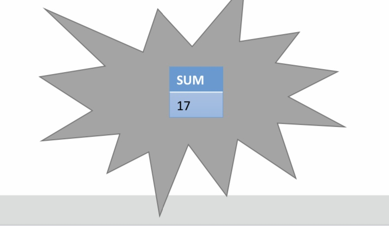
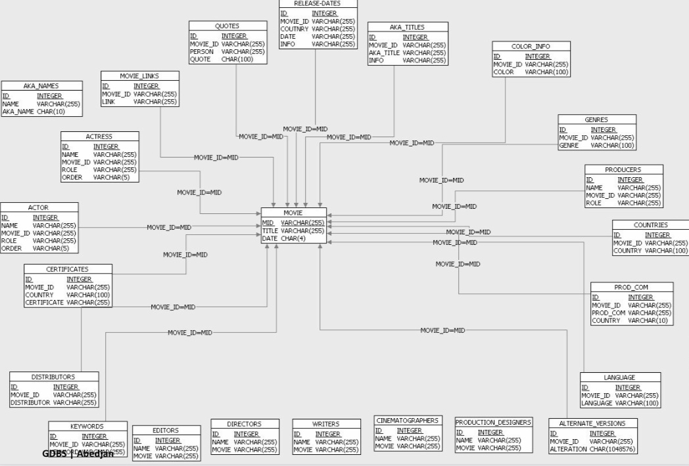
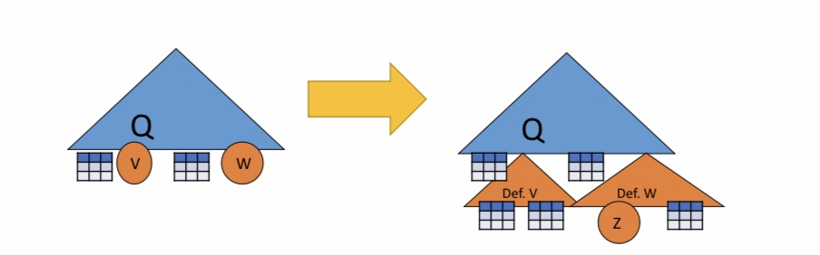

SQL
Contents
9. SQL¶
import sqlite3
import pandas as pd
%load_ext sql
%sql sqlite:///filme/filme.db
%sql sqlite:///abteilung/abteilung.db
%sql sqlite:///buecher/buecher.db
%sql sqlite:///lehre/lehre.db
%sql sqlite:///rst/rst.db
%sql sqlite:///salesDB/salesDB.db
9.1. Einführung¶
Aus den vorherigen Kapiteln haben wir gelernt wie wir eine Datenbank auf Papier entwerfen, nun schauen wir uns die in der Realität benutzten technischen Mitteln an, insbesondere die Datenbankanfragesprache SQL.
9.1.1. Motivation für SQL¶
SQL ist die meist-verbreiteste Datenbankanfragesprache. Es handelt sich hierbei um eine Very-High-Level Language, die Ad-hoc, deklarativ und nicht prozedural / imperativ ist. SQL-Anfragen sich an die relationale Algebra angelehnt. Zusätzlich sind Data definition(DDL) und Data manipulation(DML) mit SQL möglich. Wichtig zu beachten ist noch, dass sowohl Syntax, als auch Funktionalität sich von System zu System leicht unterscheiden können.
9.1.2. SQL-Historie¶
SQL(1982, IBM) entstand durch die Ursprungssprache SEQUEL(1976, IBM Research Labs San Jose). Später entwickelte sich SEQUEL zu SEQUEL2(1976, IBM Research Labs San Jose), welche auf einer der Vorreitern von Datenbanksystemen “System R” benutzt wurde.


9.1.3. SQL – Standardisierung¶
Im Laufe der Zeit durchlief SQL verschiedene Standardisierungen, die Sie aus der folgenden Auflistung entnehmen können. Trotz der Standardisierung sind Inkompatibilitäten zwischen Systemen der einzelnen Hersteller noch möglich.
SQL1 von ANSI als Standard verabschiedet (1986)
SQL1 von der (ISO) als Standard verabschiedet (1987)
1989 nochmals überarbeitet.
SQL2 oder SQL-92 von der ISO verabschiedet (1992)
SQL3 oder SQL:1999 verabschiedet
Trigger, rekursive Anfragen
Objektrelationale Erweiterungen
SQL:2003 von der ISO verabschiedet
XML-Support durch SQL/XML
SQL/XML:2006
XQuery eingebunden
SQL:2008
Updates auf Sichten, logisches Löschen (TRUNCATE), …
SQL:2011
Adds temporal data (PERIOD FOR)
SQL:2016
Adds row pattern matching, polymorphic table functions, JSON.
9.1.4. SQL:2008 Struktur¶
■ Part 1: Framework (SQL/Framework) – 82 Seiten
□ Überblick
■ Part 2: Foundation (SQL/Foundation) – 1316 Seiten
□ Datenmodell, DDL, DML, Abfragen
■ Part 3: Call-Level Interface (SQL/CLI) – 389 Seiten
□ Zugriff auf DBMS mittels Funktionsaufrufen aus anderen Programmiersprachen
■ Part 4: Persistent Stored Modules (SQL/PSM) – 188 Seiten
□ Prozedurale Erweiterungen
■ Part 9: Management of External Data (SQL/MED) – 484 Seiten
□ Neue Datentypen und Funktionen
■ Part 10: Object Language Bindings (SQL/OLB) – 396 Seiten
□ Auch (SQLJ); zur Einbettung von SQL in Java
■ Part 11: Information and Definition Schemas (SQL/Schemata) – 286 Seiten
□ DBMS werden selbst-beschreibend durch normierten Katalog
■ Part 13: SQL Routines and Types (SQL/JRT) – 198 Seiten
□ Externe Java Routinen als „stored procedures“
■ Part 14: XML-Related Specifications (SQL/XML) – 438 Seiten
□ XML Datentyp und Erweiterung von SQL um XQuery
=> Zusammen: 3777 Seiten
9.2. Einfach Anfragen¶
9.2.1. SELECT … FROM … WHERE …¶
SQL-Anfragen folgen meist einer Drei-Zeilen-Struktur aus SELECT, FROM, WHERE, wobei SELECT und FROM in jeder SQL-Anfrage enthalten sein müssen. Das Schlüsselwort SELECT entspricht dem Projektionsoperator \(\pi\), den wir aus dem Kapitel Relationale Algebra schon kennengelernt haben. Die FROM-Zeile gibt an von welchen Tabellen die Daten stammen sollen. WHERE entspricht gewissermaßen dem Selektionsoperator \(\sigma\), hier werden also Bedingungen an die Tupel gestellt die diese erfüllen sollen.
Betrachten wir folgendes Beispielschema für Filme, welches aus den vorherigen Kapiteln bekannt sein sollte. Wir möchten nun eine Anfrage formulieren, die uns alle Filme ausgibt, welche von Disney produziert und im Jahre 1990 erschienen sind.
9.2.2. Beispielschema¶

#SELECT *
#FROM Film
#WHERE StudioName = "Disney" AND Jahr= 1990;
__SQL__ = "SELECT * FROM Film WHERE StudioName = 'Disney' AND Jahr= 1990"
conn = sqlite3.connect("filme/filme.db")
df = pd.read_sql_query(__SQL__, conn)
df
| Titel | Jahr | Laenge | inFarbe | StudioName | ProduzentinID | |
|---|---|---|---|---|---|---|
| 0 | Ducktales the Movie: Treasure of the Lost Lamp | 1990 | 74 | TRUE | Disney | 1234 |
| 1 | Shipwrecked | 1990 | 92 | TRUE | Disney | 1234 |
| 2 | The Rescuers Down Under | 1990 | 77 | TRUE | Disney | 1234 |
Wir benutzen SELECT *, wodurch uns alle Attribute der ausgewählten Tabelle ausgegeben werden, alternativ kann man auch SELECT Titel, Jahr, Laenge… machen. Da wir alle Filme ausgeben wollen, schreiben wir FROM Film, da wir Tupel aus der Tabelle Film wollen. Zuletzt selektieren wir die Tupel, die StudioName = “Disney” und Jahr = 1990 erfüllen.
In SQL wird Groß- und Kleinschreibung nicht beachtet, sowohl bei Schlüsselwörtern wie SELECT, FROM, WHERE usw., als auch bei Attribut- und Relationen.
D.h es gilt also:
From = FROM = from = FrOm
Und die folgenden Anfragen sind äquivalent:
SELect vorNAMe fROm fiLM
SELECT vorname FROM film
Anders ist es natürlich bei Konstanten:
‘FROM‘ ≠ ‘from‘ ≠ from = FROM
Trotzdem gilt als Konvention zur Lesbarkeit, dass Schlüsselwörter großgeschrieben werden und Schemaelemente klein.
9.2.3. Projektion in SQL (SELECT, \(\pi\))¶
Wir betrachten nun die einzelnen Schlüsselwörter etwas genauer und starten mit der Projektion. In der SELECT Klausel werden Attribute von Relationen aufgelistet, die herausprojeziert werden sollen.
Im folgenden Beipiel wollen wir alle Attribute bzw. Spalten aus der Filmrelation ausgeben, der Stern “*” ist hier eine kürzere Schreibweise für alle Attribute.
#SELECT *
#FROM Film
__SQL__ = " SELECT * FROM Film"
conn = sqlite3.connect("filme/filme.db")
df = pd.read_sql_query(__SQL__, conn)
df
| Titel | Jahr | Laenge | inFarbe | StudioName | ProduzentinID | |
|---|---|---|---|---|---|---|
| 0 | Inside Out | 2015 | 95 | TRUE | Disney | 1234 |
| 1 | Toy Story | 1999 | 81 | TRUE | Disney | 1234 |
| 2 | Up | 2009 | 96 | TRUE | Pixar | 4567 |
| 3 | Ratatouille | 2007 | 111 | TRUE | Pixar | 4567 |
| 4 | Star Wars | 1977 | 121 | TRUE | Pinewood | 78910 |
| 5 | Star Trek | 1979 | 132 | TRUE | Paramount | 6789 |
| 6 | Lady Bird | 2017 | 95 | TRUE | Scott Rudin Productions | 3456 |
| 7 | Into the Wild | 2007 | 148 | TRUE | Paramount | 6789 |
| 8 | Brokeback Mountain | 2005 | 134 | TRUE | River Road | 4712 |
| 9 | The Lighthouse | 2019 | 109 | FALSE | A24 | 1748 |
| 10 | Roma | 2018 | 135 | FALSE | Participant | 5123 |
| 11 | La Heine | 1995 | 98 | FALSE | NULL | 2212 |
| 12 | Total Recall | 1990 | 113 | TRUE | Fox | 3310 |
| 13 | Mamma Mia! | 2008 | 108 | TRUE | Littlestar Productions | 8871 |
| 14 | The Dark Knight | 2008 | 152 | TRUE | Warner Bros. | 6035 |
| 15 | Pulp Fiction | 1994 | 154 | TRUE | A Band Apart | 7654 |
| 16 | The Great Gatsby | 2013 | 142 | TRUE | Village Roadshows | 8634 |
| 17 | Spider-Man | 2002 | 121 | TRUE | Marvel Enterprises | 6362 |
| 18 | La La Land | 2016 | 128 | TRUE | Summit Entertainment | 5123 |
| 19 | Moonlight | 2016 | 124 | TRUE | A24 | 1748 |
| 20 | Ducktales the Movie: Treasure of the Lost Lamp | 1990 | 74 | TRUE | Disney | 1234 |
| 21 | House of Gucci | 2021 | 158 | TRUE | MGM | 5555 |
| 22 | James Bond 007: Spectre | 2015 | 148 | TRUE | MGM | 5555 |
| 23 | Shipwrecked | 1990 | 92 | TRUE | Disney | 1234 |
| 24 | The Rescuers Down Under | 1990 | 77 | TRUE | Disney | 1234 |
| 25 | Gone with the Wind | 1939 | 221 | TRUE | MGM | 5555 |
Es ist auch möglich konkret die Attributsnamen aufzulisten, die ausgegeben sollen werden. Im unteren Beispiel, geben wir nur die Spalten Titel, Jahr und inFarbe von der Filmrelation aus.
#SELECT Titel, Jahr, inFarbe
#FROM Film
__SQL__ = "SELECT Titel, Jahr, inFarbe FROM Film"
conn = sqlite3.connect("filme/filme.db")
df = pd.read_sql_query(__SQL__, conn)
df
| Titel | Jahr | inFarbe | |
|---|---|---|---|
| 0 | Inside Out | 2015 | TRUE |
| 1 | Toy Story | 1999 | TRUE |
| 2 | Up | 2009 | TRUE |
| 3 | Ratatouille | 2007 | TRUE |
| 4 | Star Wars | 1977 | TRUE |
| 5 | Star Trek | 1979 | TRUE |
| 6 | Lady Bird | 2017 | TRUE |
| 7 | Into the Wild | 2007 | TRUE |
| 8 | Brokeback Mountain | 2005 | TRUE |
| 9 | The Lighthouse | 2019 | FALSE |
| 10 | Roma | 2018 | FALSE |
| 11 | La Heine | 1995 | FALSE |
| 12 | Total Recall | 1990 | TRUE |
| 13 | Mamma Mia! | 2008 | TRUE |
| 14 | The Dark Knight | 2008 | TRUE |
| 15 | Pulp Fiction | 1994 | TRUE |
| 16 | The Great Gatsby | 2013 | TRUE |
| 17 | Spider-Man | 2002 | TRUE |
| 18 | La La Land | 2016 | TRUE |
| 19 | Moonlight | 2016 | TRUE |
| 20 | Ducktales the Movie: Treasure of the Lost Lamp | 1990 | TRUE |
| 21 | House of Gucci | 2021 | TRUE |
| 22 | James Bond 007: Spectre | 2015 | TRUE |
| 23 | Shipwrecked | 1990 | TRUE |
| 24 | The Rescuers Down Under | 1990 | TRUE |
| 25 | Gone with the Wind | 1939 | TRUE |
In der SELECT Klausel ist es auch möglich die Attributsnamen in der Ausgabetabelle umzubenennen. Die Ausgabe einer SQL-Anfrage ist immer eine Tabelle. Im unteren Beispiel projezieren wir die Attribute Titel, Jahr aus der Filmrelation und benennen die Attribute in unserer Ausgabetabelle zu Name,Zeit um.
#SELECT Titel AS Name, Jahr AS Zeit
#FROM Film
__SQL__ = "SELECT Titel AS Name, Jahr AS Zeit FROM Film"
conn = sqlite3.connect("filme/filme.db")
df = pd.read_sql_query(__SQL__, conn)
df
| Name | Zeit | |
|---|---|---|
| 0 | Inside Out | 2015 |
| 1 | Toy Story | 1999 |
| 2 | Up | 2009 |
| 3 | Ratatouille | 2007 |
| 4 | Star Wars | 1977 |
| 5 | Star Trek | 1979 |
| 6 | Lady Bird | 2017 |
| 7 | Into the Wild | 2007 |
| 8 | Brokeback Mountain | 2005 |
| 9 | The Lighthouse | 2019 |
| 10 | Roma | 2018 |
| 11 | La Heine | 1995 |
| 12 | Total Recall | 1990 |
| 13 | Mamma Mia! | 2008 |
| 14 | The Dark Knight | 2008 |
| 15 | Pulp Fiction | 1994 |
| 16 | The Great Gatsby | 2013 |
| 17 | Spider-Man | 2002 |
| 18 | La La Land | 2016 |
| 19 | Moonlight | 2016 |
| 20 | Ducktales the Movie: Treasure of the Lost Lamp | 1990 |
| 21 | House of Gucci | 2021 |
| 22 | James Bond 007: Spectre | 2015 |
| 23 | Shipwrecked | 1990 |
| 24 | The Rescuers Down Under | 1990 |
| 25 | Gone with the Wind | 1939 |
In der SELECT-Klausel ist es auch möglich arithmetische Ausdrücke zu benutzen. Im folgenden Beispiel werden Titel und Laenge der Filme herausprojeziert, wobei die Laenge direkt mit einer Konstanten multipliziert wird. Daher wird in der Ausgabetabelle die Laenge in Stunden und nicht in Minuten angegeben. Dementsprechend haben wir auch das Attribut Laenge in Stunden mit dem Umbenennungsoperator AS umbenannt.
#SELECT Titel, Laenge * 0.016667 AS Stunden
#FROM Film
__SQL__ = "SELECT Titel, Laenge * 0.016667 AS Stunden FROM Film"
conn = sqlite3.connect("filme/filme.db")
df = pd.read_sql_query(__SQL__, conn)
df
| Titel | Stunden | |
|---|---|---|
| 0 | Inside Out | 1.583365 |
| 1 | Toy Story | 1.350027 |
| 2 | Up | 1.600032 |
| 3 | Ratatouille | 1.850037 |
| 4 | Star Wars | 2.016707 |
| 5 | Star Trek | 2.200044 |
| 6 | Lady Bird | 1.583365 |
| 7 | Into the Wild | 2.466716 |
| 8 | Brokeback Mountain | 2.233378 |
| 9 | The Lighthouse | 1.816703 |
| 10 | Roma | 2.250045 |
| 11 | La Heine | 1.633366 |
| 12 | Total Recall | 1.883371 |
| 13 | Mamma Mia! | 1.800036 |
| 14 | The Dark Knight | 2.533384 |
| 15 | Pulp Fiction | 2.566718 |
| 16 | The Great Gatsby | 2.366714 |
| 17 | Spider-Man | 2.016707 |
| 18 | La La Land | 2.133376 |
| 19 | Moonlight | 2.066708 |
| 20 | Ducktales the Movie: Treasure of the Lost Lamp | 1.233358 |
| 21 | House of Gucci | 2.633386 |
| 22 | James Bond 007: Spectre | 2.466716 |
| 23 | Shipwrecked | 1.533364 |
| 24 | The Rescuers Down Under | 1.283359 |
| 25 | Gone with the Wind | 3.683407 |
Zudem ist es auch möglich, sich spezielle Konstanten ausgeben zu lassen. Im unteren Beispiel fügen wir der Ausgabetabelle eine neue Spalte hinzu, mit dem Namen inStunden, in der der String ‘std.’ steht
#SELECT Titel, Laenge * 0.016667 AS Stunden, ‘std.‘ AS inStunden
#FROM Film
__SQL__ = "SELECT Titel, Laenge * 0.016667 AS Stunden, 'std.' AS inStunden FROM Film"
conn = sqlite3.connect("filme/filme.db")
df = pd.read_sql_query(__SQL__, conn)
df
| Titel | Stunden | inStunden | |
|---|---|---|---|
| 0 | Inside Out | 1.583365 | std. |
| 1 | Toy Story | 1.350027 | std. |
| 2 | Up | 1.600032 | std. |
| 3 | Ratatouille | 1.850037 | std. |
| 4 | Star Wars | 2.016707 | std. |
| 5 | Star Trek | 2.200044 | std. |
| 6 | Lady Bird | 1.583365 | std. |
| 7 | Into the Wild | 2.466716 | std. |
| 8 | Brokeback Mountain | 2.233378 | std. |
| 9 | The Lighthouse | 1.816703 | std. |
| 10 | Roma | 2.250045 | std. |
| 11 | La Heine | 1.633366 | std. |
| 12 | Total Recall | 1.883371 | std. |
| 13 | Mamma Mia! | 1.800036 | std. |
| 14 | The Dark Knight | 2.533384 | std. |
| 15 | Pulp Fiction | 2.566718 | std. |
| 16 | The Great Gatsby | 2.366714 | std. |
| 17 | Spider-Man | 2.016707 | std. |
| 18 | La La Land | 2.133376 | std. |
| 19 | Moonlight | 2.066708 | std. |
| 20 | Ducktales the Movie: Treasure of the Lost Lamp | 1.233358 | std. |
| 21 | House of Gucci | 2.633386 | std. |
| 22 | James Bond 007: Spectre | 2.466716 | std. |
| 23 | Shipwrecked | 1.533364 | std. |
| 24 | The Rescuers Down Under | 1.283359 | std. |
| 25 | Gone with the Wind | 3.683407 | std. |
9.2.4. Selektion in SQL (WHERE, \(\sigma\))¶
Die Selektion die wir aus der relationalen Algebra kennen wird in SQL mit dem Schlüsselwort WHERE ausgedrückt, nicht mit dem Schlüsselwort SELECT. Wie aus anderen Programmiersprachen bekannt, kann man in der WHERE-Klausel Bedinungen aufstellen.
Es gibt sechs Vergleichsoperatoren =, <>, <, >, <=, >=(gleich, ungleich, kleiner, größer, kleiner gleich, größer gleich), hier können Sie links und rechts der Vergleichsoperatoren Konstanten und Attribute einsetzen. Insbesondere ist es auch möglich Attribute in der WHERE-Klausel zu vergleichen, die nicht in der SELECT- Klausel herausprojeziert werden. Auch im WHERE kann man arithmetische Ausdrücke in die Bedinung einbauen wie in diesem Beispiel:
(Jahr - 1930) * (Jahr - 1930) <= 100
Und Konstanten und auch Variablen konkatenieren:
‘Star‘ || ‘Wars‘
entspricht
‘StarWars‘
oder ein Beispiel mit Variablen:
Vorname || ' ' || Nachname = 'Luke Skywalker'
Hier werden die Variablen Vorname und Nachname mit einer Leerstelle konkateniert und verglichen, ob der String ‘Luke Skywalker’ entspricht.
Das Ergebnis der Vergleichsoperation in SQL ist dann ein Bool’escher Wert, als TRUE oder FALSE. Dementsprechend können mehrere Vergleichsoperatoren mit AND, OR und NOT verknüpft werden, wobei die Klammerungen auch den bekannten Regeln der Logik entsprechen.
Nur wenn die gesamte WHERE-Klausel zu TRUE evaluiert wird, werden die entsprechenden Tupel ausgegeben.
Im unteren Beispiel wollen wir jene Titel aus der Relation Film ausgeben, die nach dem Jahr 1970 erschienen und schwarz-weiß sind
#SELECT Titel
#FROM Film
#WHERE Jahr > 1970 AND NOT inFarbe;
__SQL__ = "SELECT Titel FROM Film WHERE Jahr > 1970 AND NOT inFarbe"
conn = sqlite3.connect("filme/filme.db")
df = pd.read_sql_query(__SQL__, conn)
df
| Titel | |
|---|---|
| 0 | Inside Out |
| 1 | Toy Story |
| 2 | Up |
| 3 | Ratatouille |
| 4 | Star Wars |
| 5 | Star Trek |
| 6 | Lady Bird |
| 7 | Into the Wild |
| 8 | Brokeback Mountain |
| 9 | The Lighthouse |
| 10 | Roma |
| 11 | La Heine |
| 12 | Total Recall |
| 13 | Mamma Mia! |
| 14 | The Dark Knight |
| 15 | Pulp Fiction |
| 16 | The Great Gatsby |
| 17 | Spider-Man |
| 18 | La La Land |
| 19 | Moonlight |
| 20 | Ducktales the Movie: Treasure of the Lost Lamp |
| 21 | House of Gucci |
| 22 | James Bond 007: Spectre |
| 23 | Shipwrecked |
| 24 | The Rescuers Down Under |
In diesem Beispiel möchten wir wieder alle Filmtitel ausgeben, hier aber alle Filme die von MGM produziert wurden sind und nach dem Jahr 1970 erschienen sind oder kürzer als 90 min sind.
#SELECT Titel
#FROM Film
#WHERE (Jahr > 1970 OR Laenge < 90) AND StudioName = "MGM";
__SQL__ = "SELECT Titel FROM Film WHERE (Jahr > 1970 OR Laenge < 90) AND StudioName = 'MGM';"
conn = sqlite3.connect("filme/filme.db")
df = pd.read_sql_query(__SQL__, conn)
df
| Titel | |
|---|---|
| 0 | House of Gucci |
| 1 | James Bond 007: Spectre |
9.2.5. Stringvergleiche¶
In SQL gibt es Datentypen unteranderem die Datentypen Array fester Länge, Buchstabenliste variabler Länge und Konstanten. Es sind viele Vergleiche über Datentypen hinweg erlaubt. In diesem Beispiel vergleichen wir eine Variable mit einer weiteren Variable und einer Stringkonstanten:
foo _ _ _ _ _ = foo = ‘foo‘
Ebenfalls sind lexikographische Vergleiche mit den schon bekannten Vergleichsoperatoren =, <, >, <=, >=, <> möglich. Je nach verwendeter DBMS werden Sortierreihenfolge mit upper-case/lower-case andere behandelt
'fodder' < 'foo'
'bar' < 'bargain'
9.2.6. String-Mustervergleiche mit LIKE¶
Mit dem LIKE Operator können Sie Stringteile miteinander vergleichen, also ob ein String einem gewissen Stringmuster folgt. Hierfür gibt es zwei spezielle Zeichen, einmal ‘%’, welches eine beliebige Sequenz von 0 oder mehr Zeichen entspricht und ‘_’, welches ein einzelnes beliebiges Zeichen steht. Hierfür ein Beispiel: Wir suchen jene Titel aus der Filmrelation, wo der Titel mit ‘Star’ beginnt, ein Leerzeichen folgt und 4 beliebige Zeichen folgen.
#SELECT Titel
#FROM Film WHERE Titel LIKE "Star ____";
__SQL__ = "SELECT Titel FROM Film WHERE Titel LIKE 'Star ____'"
conn = sqlite3.connect("filme/filme.db")
df = pd.read_sql_query(__SQL__, conn)
df
| Titel | |
|---|---|
| 0 | Star Trek |
| 1 | Star Wars |
Hier suchen wir alle Titel, wo das Wort ‘War’ vorkommen muss. Sowohl vor dem ‘War’ als auch nachdem ‘War’ sind beliebige Zeichensequenzen erlaubt.
#SELECT Titel
#FROM Film
#WHERE Titel LIKE "%War%";
__SQL__ = "SELECT Titel FROM Film WHERE Titel LIKE '%War%'"
conn = sqlite3.connect("filme/filme.db")
df = pd.read_sql_query(__SQL__, conn)
df
| Titel | |
|---|---|
| 0 | Star Wars |
9.2.7. Datum und Uhrzeit¶
In SQL gibt es auch Datentypen um Daten und Zeiten darzustellen.Der Datentyp DATE stellt ein Datumskonstante dar:
– DATE ‘YYYY-MM-DD‘
– DATE ‘1948-05-14‘
Zeitkonstanten werden mit dem Datentyp TIME dargestellt:
– TIME ‘HH:MM:SS.S‘
– TIME ‘15:00:02.5‘
Zeitstempel, also eine Kombination aus Datum und Zeit, werden mit dem Datentyp TIMESTAMP dargestellt:
– TIMESTAMP ‘1948-05-14 15:00:02.5‘
Auch dieses Datentypen können wieder miteinander ,in Form von Variablen und Konstanten, verglichen werden:
– TIME ‘15:00:02.5‘ < TIME ‘15:02:02.5‘ ergibt TRUE
– ERSCHEINUNGSTAG >= DATE ‘1949-11-12‘
9.2.8. Nullwerte¶
Nullwerte sind spezielle Datentypen, in SQL wird dieser als NULL dargestellt, auf Papier ist auch ⊥ geläufig. Es gibt mehrere Arten einen Nullwert zu interpretieren. Zum einen kann ein Nullwert bedeuten, dass ein Wert unbekannt ist, z.B kann es sein, dass der Geburtstag eines/r Schauspieler*in unbekannt ist. Eine weitere Interpretationsart ist, dass ein Wert eingetragen wurde der unzulässig ist, wie z.B ein Ehegatte eine eines/r Schauspieler*in. Zuletzt können mit Nullwerten bestimmte Zellen oder Spalten maskiert werden, wie z.B bei einer unterdrückten Telefonnummer.
Bei dem Umgang mit Nullwerten gibt es verschiedene Regeln, die beachtet werden müssen. Wird NULL mit arithmetischen Operationen verknüpft, so ergibt sich aus der Verknüpfung wiederum NULL. Bei Vergleichen mit NULL ergibt der Wahrheitswert UNKNOWN und nicht NULL. Man muss auch beachten, dass NULL keine Konstante ist, sondern NULL erscheint als Attributwert, abhängig von dem DBMS gilt NULL = NULL oder NULL \(\neq\) NULL.
Beispiele: Sei der Wert von einer Variablen x NULL. Der Ausdruck x+3 ergibt NULL, da x NULL ist. Der Ausdruck NULL+3 ist unzulässig und kann so auch nicht geschrieben werden. Der Vergleich x=3 ergibt UNKNOWN, auch da x NULL ist.
Weiterhin kann in der WHERE-Klausel mit IS NULL und IS NOT NULL überprüft werden, ob ein Wert NULL its. Z.B:
Geburtstag IS NULL
Geburtstag IS NOT NULL
9.2.9. Wahrheitswerte¶
AND |
true |
unknown |
false |
|---|---|---|---|
true |
true |
unknown |
false |
unknown |
unknown |
unknown |
false |
false |
false |
false |
false |
OR |
true |
unknown |
false |
|---|---|---|---|
true |
true |
true |
true |
unknown |
true |
unknown |
unknown |
false |
false |
unknown |
false |
NOT |
|---|
true |
unknown |
false |
Nehmen wir an TRUE=1, FALSE=0 und UNKNOWN = ½. Dann ergeben sich folgende Rechenregeln:
AND: Minimum der beiden Werte
OR: Maximum der beiden Werte
NOT: 1 – Wert
Beispiele:
TRUE AND (FALSE OR NOT(UNKNOWN))
= MIN(1, MAX(0, (1 - ½ )))
= MIN(1, MAX(0, ½ )
= MIN(1, ½ ) = ½.
Zu beachten bei der Ausführungspriorität: NOT vor AND vor OR
#SELECT *
#FROM Film
#WHERE Laenge <= 90
#OR Laenge > 90; --Laenge <= 90 == UNKNOWN und Länge > 90
__SQL__ = "SELECT * FROM Film WHERE Laenge <= 90 OR Laenge > 90; --Laenge <= 90 == UNKNOWN und Länge > 90"
conn = sqlite3.connect("filme/filme.db")
df = pd.read_sql_query(__SQL__, conn)
df
| Titel | Jahr | Laenge | inFarbe | StudioName | ProduzentinID | |
|---|---|---|---|---|---|---|
| 0 | Inside Out | 2015 | 95 | TRUE | Disney | 1234 |
| 1 | Toy Story | 1999 | 81 | TRUE | Disney | 1234 |
| 2 | Up | 2009 | 96 | TRUE | Pixar | 4567 |
| 3 | Ratatouille | 2007 | 111 | TRUE | Pixar | 4567 |
| 4 | Star Wars | 1977 | 121 | TRUE | Pinewood | 78910 |
| 5 | Star Trek | 1979 | 132 | TRUE | Paramount | 6789 |
| 6 | Lady Bird | 2017 | 95 | TRUE | Scott Rudin Productions | 3456 |
| 7 | Into the Wild | 2007 | 148 | TRUE | Paramount | 6789 |
| 8 | Brokeback Mountain | 2005 | 134 | TRUE | River Road | 4712 |
| 9 | The Lighthouse | 2019 | 109 | FALSE | A24 | 1748 |
| 10 | Roma | 2018 | 135 | FALSE | Participant | 5123 |
| 11 | La Heine | 1995 | 98 | FALSE | NULL | 2212 |
| 12 | Total Recall | 1990 | 113 | TRUE | Fox | 3310 |
| 13 | Mamma Mia! | 2008 | 108 | TRUE | Littlestar Productions | 8871 |
| 14 | The Dark Knight | 2008 | 152 | TRUE | Warner Bros. | 6035 |
| 15 | Pulp Fiction | 1994 | 154 | TRUE | A Band Apart | 7654 |
| 16 | The Great Gatsby | 2013 | 142 | TRUE | Village Roadshows | 8634 |
| 17 | Spider-Man | 2002 | 121 | TRUE | Marvel Enterprises | 6362 |
| 18 | La La Land | 2016 | 128 | TRUE | Summit Entertainment | 5123 |
| 19 | Moonlight | 2016 | 124 | TRUE | A24 | 1748 |
| 20 | Ducktales the Movie: Treasure of the Lost Lamp | 1990 | 74 | TRUE | Disney | 1234 |
| 21 | House of Gucci | 2021 | 158 | TRUE | MGM | 5555 |
| 22 | James Bond 007: Spectre | 2015 | 148 | TRUE | MGM | 5555 |
| 23 | Shipwrecked | 1990 | 92 | TRUE | Disney | 1234 |
| 24 | The Rescuers Down Under | 1990 | 77 | TRUE | Disney | 1234 |
| 25 | Gone with the Wind | 1939 | 221 | TRUE | MGM | 5555 |
9.2.10. Sortierung¶
In SQL sind Sortierungen(ASC für aufsteigend bzw. DESC für absteigend) mit der ORDER BY Klausel möglich, welche an das Ende der Anfrage geschrieben wird. ASC wird als default gewählt:
ORDER BY <Attributliste> DESC/ASC
Im folgenden Beispiel wollen wir alle Attribute der Filmrelation ausgeben, welche von Disney produziert wurden und 1990 erschienen sind. Zusätzlich, soll die Ausgabe zuerst nach dem Attribut Laenge und folgend nach dem Attribut Titel aufsteigend sortiert werden.
#SELECT *
#FROM Film
#WHERE StudioName = "Disney"
#AND Jahr = 1990 ORDER BY Laenge, Titel;
__SQL__ = "SELECT * FROM Film WHERE StudioName = 'Disney' AND Jahr = 1990 ORDER BY Laenge,Titel;"
conn = sqlite3.connect("filme/filme.db")
df = pd.read_sql_query(__SQL__, conn)
df
| Titel | Jahr | Laenge | inFarbe | StudioName | ProduzentinID | |
|---|---|---|---|---|---|---|
| 0 | Ducktales the Movie: Treasure of the Lost Lamp | 1990 | 74 | TRUE | Disney | 1234 |
| 1 | The Rescuers Down Under | 1990 | 77 | TRUE | Disney | 1234 |
| 2 | Shipwrecked | 1990 | 92 | TRUE | Disney | 1234 |
Hier wird zuerst nach Laenge aufsteigend sortiert und folgend nach Titel aber absteigend.
#SELECT *
#FROM Film
#WHERE StudioName = "Disney"
#AND Jahr = 1990 ORDER BY Laenge ASC, Titel DESC;
__SQL__ = "SELECT * FROM Film WHERE StudioName = 'Disney' AND Jahr = 1990 ORDER BY Laenge ASC, Titel DESC;"
conn = sqlite3.connect("filme/filme.db")
df = pd.read_sql_query(__SQL__, conn)
df
| Titel | Jahr | Laenge | inFarbe | StudioName | ProduzentinID | |
|---|---|---|---|---|---|---|
| 0 | Ducktales the Movie: Treasure of the Lost Lamp | 1990 | 74 | TRUE | Disney | 1234 |
| 1 | The Rescuers Down Under | 1990 | 77 | TRUE | Disney | 1234 |
| 2 | Shipwrecked | 1990 | 92 | TRUE | Disney | 1234 |
9.3. Anfragen über mehrere Relationen¶
9.3.1. Motivation¶
Die Hauptstärke der Relationalen Algebra ist die Kombination von Relationen. Erst durch die Kombination mehrerer Relationen sind viele interessante Anfragen möglich. In SQL ist das möglich, indem man die beteiligten Relationen in der FROM-Klausel nennt.
9.3.2. Kreuzprodukt und Join¶
Im folgenden Beispiel haben wir die Relationen Film(Titel, Jahr, Länge, inFarbe, StudioName, ProduzentinID) und ManagerIn(Name, Adresse, ManagerinID, Gehalt) gegeben. Wir möchten nun alle Namen der Manager*Innen ausgeben, die einen Star Wars Film produziert haben. Hierfür müssen die Relationen Film und ManagerIn gejoint werden.Zuerst bilden wir das Kruezprodukt der beiden Relationen, indem wir in der FROM-Klausel die Relationen mit einem Komma getrennt nennen , so wird intern das Kreuzprodukt dieser beiden gebildet. Schließlich wenden wir noch einmal die Selektionsbedingung an, also dass nur ManagerInnen die einen Star Wars Film produziert haben ausgegeben werden. Und zuletzt noch die Joinbedingung, undzwar dass ProduzentinID und ManagerinID im Kreuzprodukt übereinstimmen sollen. Falls die beiden Bedinungen erfüllt sind wird ein Ergebnistupel produziert. Hierbei ist noch zu beachten, dass die Reihenfolge der WHERE-Bedingungen irrelevant ist.
#SELECT Name
#FROM Film, ManagerIn
#WHERE Titel = "Star Wars"
#AND ProduzentinID = ManagerinID;
__SQL__ = "SELECT Name FROM Film, ManagerIn WHERE Titel = 'Star Wars' AND ProduzentinID = ManagerinID"
conn = sqlite3.connect("filme/filme.db")
df = pd.read_sql_query(__SQL__, conn)
df
| Name | |
|---|---|
| 0 | Paul Golding |
#SELECT Name
#FROM Film, ManagerIn --Kreuzprodukt
#WHERE Titel = ‘Star Wars‘--Selektionsbedingung
#AND ProduzentinID = ManagerinID; --Joinbedingung
#SELECT Name
#FROM Film, ManagerIn
#WHERE Titel = "Star Wars"
#AND ProduzentinID = ManagerinID;
__SQL__ = "SELECT Name FROM Film, ManagerIn WHERE Titel = 'Star Wars' AND ProduzentinID = ManagerinID"
conn = sqlite3.connect("filme/filme.db")
cur = conn.cursor()
df = pd.read_sql_query(__SQL__, conn)
df
| Name | |
|---|---|
| 0 | Paul Golding |
9.3.3. Uneindeutige Attributnamen¶
In diesem Beispiel haben wir die Relationen SchauspielerIn(Name, Adresse, Geschlecht, Geburtstag) und ManagerIn(Name, Adresse, ManagerinID, Gehalt) gegeben. Beide Relationen haben ein Attribut namens “Name”. Wir wollen nun die Namen der Schauspieler*Innen und Manager*Innen ausgeben, die die selbe Adresse haben. Wie im vorherigen Beispiel,bilden wir wieder das Kreuzprodukt beider. Da nur der Attributname der Relationen uneindeutig wäre, muss in der Anfrage immer ein Präfix vor das Attribut gesetzt werden. Auch bei keiner Uneindeutigkeit, kann man das Präfix schreiben, was manchmal as Lesen von SQL-Anfragen erleichtert.
#SELECT SchauspielerIn.Name, ManagerIn.Name
#FROM SchauspielerIn, ManagerIn
#WHERE SchauspielerIn.Adresse = ManagerIn.Adresse;
__SQL__ = "SELECT SchauspielerIn.Name, ManagerIn.Name FROM SchauspielerIn, ManagerIn WHERE SchauspielerIn.Adresse = ManagerIn.Adresse;"
conn = sqlite3.connect("filme/filme.db")
df = pd.read_sql_query(__SQL__, conn)
df
| Name | Name |
|---|
9.3.4. Tupelvariablen¶
In SQL ist es möglich einen Alias für eine Relation innerhalb einer Anfrage festzulegen. Dies ist sinnvoll, um die Tupeln, der beteiligten Relationen eindeutig zu Kennzeichnen, insbesondere wenn eine Relation mehrfach innerhalb einer Anfrage vorkommt. Umbenennung kann ebenfalls sinnvoll sein, um lange Relationennamen abzukürzen, um bessere Lesbarkeit zu schaffen. Ein Beispiel hierfür ist, z.B der Selfjoin im unteren Beispiel ,wo wir Schauspieler suchen, die zusammenleben. Und das Beispiel danach, wo wir Umbennenung zur Verkürzung der Anfrage benutzen.
SchauspielerIn Star2
ist äquivalent zu
SchauspielerIn AS Star2
#SELECT Star1.Name, Star2.Name
#FROM SchauspielerIn Star1, SchauspielerIn Star2
#WHERE Star1.Adresse = Star2.Adresse
__SQL__ = "SELECT Star1.Name, Star2.Name FROM SchauspielerIn Star1, SchauspielerIn Star2 WHERE Star1.Adresse = Star2.Adresse"
conn = sqlite3.connect("filme/filme.db")
df = pd.read_sql_query(__SQL__, conn)
df
| Name | Name | |
|---|---|---|
| 0 | Arnold Schwarzenegger | Arnold Schwarzenegger |
| 1 | Sharon Stone | Sharon Stone |
| 2 | Robert Pattinson | Robert Pattinson |
| 3 | Scarlet Johansson | Scarlet Johansson |
| 4 | Saorise Ronan | Saorise Ronan |
| 5 | Jake Gyllenhaal | Jake Gyllenhaal |
| 6 | Heath Ledger | Heath Ledger |
| 7 | Mark Hamill | Mark Hamill |
| 8 | Carrie Fisher | Carrie Fisher |
| 9 | Harrison Ford | Harrison Ford |
| 10 | Emile Hirsch | Emile Hirsch |
| 11 | Vincent Cassel | Léa Seydoux |
| 12 | Vincent Cassel | Vincent Cassel |
| 13 | Meryl Streep | Meryl Streep |
| 14 | Cameron Diaz | Cameron Diaz |
| 15 | Cameron Diaz | Leonardo DiCaprio |
| 16 | Emma Stone | Emma Stone |
| 17 | Phyllis Smith | Phyllis Smith |
| 18 | Willem Dafoe | Willem Dafoe |
| 19 | Leonardo DiCaprio | Cameron Diaz |
| 20 | Leonardo DiCaprio | Leonardo DiCaprio |
| 21 | Tobey Maguire | Kirsten Dunst |
| 22 | Tobey Maguire | Tobey Maguire |
| 23 | Samuel L. Jackson | Samuel L. Jackson |
| 24 | Will Smith | Will Smith |
| 25 | Tom Hanks | Tom Hanks |
| 26 | Kirsten Dunst | Kirsten Dunst |
| 27 | Kirsten Dunst | Tobey Maguire |
| 28 | Ryan Gosling | Jared Leto |
| 29 | Ryan Gosling | Ryan Gosling |
| 30 | Mahershala Ali | Mahershala Ali |
| 31 | William Shatner | William Shatner |
| 32 | Alan Young | Alan Young |
| 33 | Jared Leto | Jared Leto |
| 34 | Jared Leto | Ryan Gosling |
| 35 | Adam Driver | Adam Driver |
| 36 | Lady Gaga | Lady Gaga |
| 37 | Daniel Craig | Daniel Craig |
| 38 | Léa Seydoux | Léa Seydoux |
| 39 | Léa Seydoux | Vincent Cassel |
| 40 | Christoph Waltz | Christoph Waltz |
#SELECT S.Name, M.Name
#FROM SchauspielerIn S, ManagerIn M
#WHERE S.Adresse = M.Adresse;
__SQL__ = "SELECT S.Name, M.Name FROM SchauspielerIn S, ManagerIn M WHERE S.Adresse = M.Adresse;"
conn = sqlite3.connect("filme/filme.db")
df = pd.read_sql_query(__SQL__, conn)
df
| Name | Name |
|---|
9.3.5. Tupelvariablen-Selfjoin¶
#SELECT Star1.Name, Star2.Name
#FROM SchauspielerIn Star1, SchauspielerIn Star2
#WHERE Star1.Adresse = Star2.Adresse;
__SQL__ = "SELECT Star1.Name, Star2.Name FROM SchauspielerIn Star1, SchauspielerIn Star2 WHERE Star1.Adresse = Star2.Adresse;"
conn = sqlite3.connect("filme/filme.db")
df = pd.read_sql_query(__SQL__, conn)
df
| Name | Name | |
|---|---|---|
| 0 | Arnold Schwarzenegger | Arnold Schwarzenegger |
| 1 | Sharon Stone | Sharon Stone |
| 2 | Robert Pattinson | Robert Pattinson |
| 3 | Scarlet Johansson | Scarlet Johansson |
| 4 | Saorise Ronan | Saorise Ronan |
| 5 | Jake Gyllenhaal | Jake Gyllenhaal |
| 6 | Heath Ledger | Heath Ledger |
| 7 | Mark Hamill | Mark Hamill |
| 8 | Carrie Fisher | Carrie Fisher |
| 9 | Harrison Ford | Harrison Ford |
| 10 | Emile Hirsch | Emile Hirsch |
| 11 | Vincent Cassel | Léa Seydoux |
| 12 | Vincent Cassel | Vincent Cassel |
| 13 | Meryl Streep | Meryl Streep |
| 14 | Cameron Diaz | Cameron Diaz |
| 15 | Cameron Diaz | Leonardo DiCaprio |
| 16 | Emma Stone | Emma Stone |
| 17 | Phyllis Smith | Phyllis Smith |
| 18 | Willem Dafoe | Willem Dafoe |
| 19 | Leonardo DiCaprio | Cameron Diaz |
| 20 | Leonardo DiCaprio | Leonardo DiCaprio |
| 21 | Tobey Maguire | Kirsten Dunst |
| 22 | Tobey Maguire | Tobey Maguire |
| 23 | Samuel L. Jackson | Samuel L. Jackson |
| 24 | Will Smith | Will Smith |
| 25 | Tom Hanks | Tom Hanks |
| 26 | Kirsten Dunst | Kirsten Dunst |
| 27 | Kirsten Dunst | Tobey Maguire |
| 28 | Ryan Gosling | Jared Leto |
| 29 | Ryan Gosling | Ryan Gosling |
| 30 | Mahershala Ali | Mahershala Ali |
| 31 | William Shatner | William Shatner |
| 32 | Alan Young | Alan Young |
| 33 | Jared Leto | Jared Leto |
| 34 | Jared Leto | Ryan Gosling |
| 35 | Adam Driver | Adam Driver |
| 36 | Lady Gaga | Lady Gaga |
| 37 | Daniel Craig | Daniel Craig |
| 38 | Léa Seydoux | Léa Seydoux |
| 39 | Léa Seydoux | Vincent Cassel |
| 40 | Christoph Waltz | Christoph Waltz |
Damit wir wie in der Ausgabe der obigen Beispiels, keine redundanten Tupel haben, setzten wir zusätzlich noch die Bedingung, dass die Namen der Schauspieler*Innen verschieden sein müssen.
#SELECT Star1.Name, Star2.Name
#FROM SchauspielerIn Star1, SchauspielerIn Star2
#WHERE Star1.Adresse = Star2.Adresse
#AND Star1.Name <> Star2.Name;
__SQL__ = "SELECT Star1.Name, Star2.Name FROM SchauspielerIn Star1, SchauspielerIn Star2 WHERE Star1.Adresse = Star2.Adresse AND Star1.Name <> Star2.Name;"
conn = sqlite3.connect("filme/filme.db")
cur = conn.cursor()
df = pd.read_sql_query(__SQL__, conn)
df
| Name | Name | |
|---|---|---|
| 0 | Vincent Cassel | Léa Seydoux |
| 1 | Cameron Diaz | Leonardo DiCaprio |
| 2 | Leonardo DiCaprio | Cameron Diaz |
| 3 | Tobey Maguire | Kirsten Dunst |
| 4 | Kirsten Dunst | Tobey Maguire |
| 5 | Ryan Gosling | Jared Leto |
| 6 | Jared Leto | Ryan Gosling |
| 7 | Léa Seydoux | Vincent Cassel |
9.3.6. Interpretation von Anfragen¶
Anfragen können auf unterschiedlich Arten und Weisen interpretiert werden. Es gibt drie Interpretationsvarianten für Anfragen mit mehreren Relationen. Mit der Nested Loops(geschachtelte Schleifen) gibt es bei mehreren Tupelvariablen, für jede Variable eine geschachtelte Schleife. Bei der parallelen Zuordnung werden alle Kombinationen parallel bzgl. der Bedingungen geprüft. In der Relationen Algebra wird zuerst das Kreuzprodukt gebildet und dann auf jedes Resulat-Tupel die Selektionsbedingungen angewendet.
Im folgenden Beispiel sind die Relationen R(A), S(A) und T(A) mit dem selben Attribut A gegeben. Wir suchen die folgenden Tupel R ∩ (S ∪ T) (= (R ∩ S) ∪ (R ∩ T) ). Nehmen wir an dass T leer sei, das vermeintliche Resultat ist R ∩ S. Mit Nested Loops ist das Ergebnis jedoch leer.
#SELECT R.A
#FROM R, S, T
#WHERE R.A = S.A
#OR R.A = T.A;
__SQL__ = "SELECT R.A FROM R, S, T WHERE R.A = S.A OR R.A = T.A;"
conn = sqlite3.connect("rst/rst.db")
df = pd.read_sql_query(__SQL__, conn)
df
| A | |
|---|---|
| 0 | 2 |
| 1 | 6 |
| 2 | 4 |
Im folgenden Beispiel ist das Ergebnis mit Nested Loops nicht leer.
#SELECT *
#FROM
#(
# (SELECT A FROM R)
# INTERSECT
# (SELECT * FROM
# (SELECT A FROM S)
# UNION
# (SELECT A FROM T)
# )
#)
__SQL__ = "SELECT * FROM (SELECT A FROM R INTERSECT SELECT * FROM (SELECT A FROM S) UNION SELECT A FROM T)"
conn = sqlite3.connect("rst/rst.db")
df = pd.read_sql_query(__SQL__, conn)
df
| A | |
|---|---|
| 0 | 2 |
| 1 | 4 |
| 2 | 6 |
| 3 |
9.3.7. Joins¶

Bis hierhin haben wir Joins nur mit Komma zwischen den Relationennamen in der FROM-Klausel und der Joinbedingung in der WHERE-Klausel kennengelernt. Kreuzprodukte können auch mit CROSS JOIN ausgedrückt werden,z.B Film CROSS JOIN spielt_in, hier werden direkt doppelte Attributnamen mit Präfix der Relation schon aufgelöst.
Ein Beispiel für ein Theta-Join finden wir unten.
#SELECT *
#FROM Film JOIN spielt_in ON Titel = FilmTitel
#AND Jahr = FilmJahr
__SQL__ = "SELECT * FROM Film JOIN spielt_in ON Titel = FilmTitel AND Jahr = FilmJahr"
conn = sqlite3.connect("filme/filme.db")
df = pd.read_sql_query(__SQL__, conn)
df
| Titel | Jahr | Laenge | inFarbe | StudioName | ProduzentinID | FilmTitel | FilmJahr | Name | |
|---|---|---|---|---|---|---|---|---|---|
| 0 | Star Wars | 1977 | 121 | TRUE | Pinewood | 78910 | Star Wars | 1977 | Mark Hamill |
| 1 | Star Wars | 1977 | 121 | TRUE | Pinewood | 78910 | Star Wars | 1977 | Harrison Ford |
| 2 | Star Wars | 1977 | 121 | TRUE | Pinewood | 78910 | Star Wars | 1977 | Carrie Fisher |
| 3 | Into the Wild | 2007 | 148 | TRUE | Paramount | 6789 | Into the Wild | 2007 | Emile Hirsch |
| 4 | Brokeback Mountain | 2005 | 134 | TRUE | River Road | 4712 | Brokeback Mountain | 2005 | Jake Gyllenhaal |
| 5 | Brokeback Mountain | 2005 | 134 | TRUE | River Road | 4712 | Brokeback Mountain | 2005 | Heath Ledger |
| 6 | The Dark Knight | 2008 | 152 | TRUE | Warner Bros. | 6035 | The Dark Knight | 2008 | Heath Ledger |
| 7 | The Lighthouse | 2019 | 109 | FALSE | A24 | 1748 | The Lighthouse | 2019 | Robert Pattinson |
| 8 | The Lighthouse | 2019 | 109 | FALSE | A24 | 1748 | The Lighthouse | 2019 | Willem Dafoe |
| 9 | The Great Gatsby | 2013 | 142 | TRUE | Village Roadshows | 8634 | The Great Gatsby | 2013 | Leonardo DiCaprio |
| 10 | The Great Gatsby | 2013 | 142 | TRUE | Village Roadshows | 8634 | The Great Gatsby | 2013 | Tobey Maguire |
| 11 | The Great Gatsby | 2013 | 142 | TRUE | Village Roadshows | 8634 | The Great Gatsby | 2013 | Carey Mulligan |
| 12 | Lady Bird | 2017 | 95 | TRUE | Scott Rudin Productions | 3456 | Lady Bird | 2017 | Saoirse Ronan |
| 13 | La Heine | 1995 | 98 | FALSE | NULL | 2212 | La Heine | 1995 | Vincent Cassel |
| 14 | Mamma Mia! | 2008 | 108 | TRUE | Littlestar Productions | 8871 | Mamma Mia! | 2008 | Meryl Streep |
| 15 | Inside Out | 2015 | 95 | TRUE | Disney | 1234 | Inside Out | 2015 | Phyllis Smith |
| 16 | Total Recall | 1990 | 113 | TRUE | Fox | 3310 | Total Recall | 1990 | Arnold Schwarzenegger |
| 17 | Total Recall | 1990 | 113 | TRUE | Fox | 3310 | Total Recall | 1990 | Sharon Stone |
| 18 | Pulp Fiction | 1994 | 154 | TRUE | A Band Apart | 7654 | Pulp Fiction | 1994 | Samuel L. Jackson |
| 19 | Up | 2009 | 96 | TRUE | Pixar | 4567 | Up | 2009 | Tom Hanks |
| 20 | Spider-Man | 2002 | 121 | TRUE | Marvel Enterprises | 6362 | Spider-Man | 2002 | Tobey Maguire |
| 21 | Spider-Man | 2002 | 121 | TRUE | Marvel Enterprises | 6362 | Spider-Man | 2002 | Willem Dafoe |
| 22 | Spider-Man | 2002 | 121 | TRUE | Marvel Enterprises | 6362 | Spider-Man | 2002 | Kirsten Dunst |
| 23 | La La Land | 2016 | 128 | TRUE | Summit Entertainment | 5123 | La La Land | 2016 | Emma Stone |
| 24 | La La Land | 2016 | 128 | TRUE | Summit Entertainment | 5123 | La La Land | 2016 | Ryan Gosling |
| 25 | Moonlight | 2016 | 124 | TRUE | A24 | 1748 | Moonlight | 2016 | Mahershala Ali |
| 26 | Star Trek | 1979 | 132 | TRUE | Paramount | 6789 | Star Trek | 1979 | William Shatner |
| 27 | Ducktales the Movie: Treasure of the Lost Lamp | 1990 | 74 | TRUE | Disney | 1234 | Ducktales the Movie: Treasure of the Lost Lamp | 1990 | Alan Young |
| 28 | House of Gucci | 2021 | 158 | TRUE | MGM | 5555 | House of Gucci | 2021 | Jared Leto |
| 29 | House of Gucci | 2021 | 158 | TRUE | MGM | 5555 | House of Gucci | 2021 | Adam Driver |
| 30 | House of Gucci | 2021 | 158 | TRUE | MGM | 5555 | House of Gucci | 2021 | Lady Gaga |
| 31 | James Bond 007: Spectre | 2015 | 148 | TRUE | MGM | 5555 | James Bond 007: Spectre | 2015 | Daniel Craig |
| 32 | James Bond 007: Spectre | 2015 | 148 | TRUE | MGM | 5555 | James Bond 007: Spectre | 2015 | Léa Seydoux |
| 33 | James Bond 007: Spectre | 2015 | 148 | TRUE | MGM | 5555 | James Bond 007: Spectre | 2015 | Christoph Waltz |
Beim JOIN werden im Vergleich zum CROSS JOIN die redundanten Attribute eliminiert. Damit das geschieht muss natürlich ein Fremdschlüsselbeziehung vorhanden sein oder die Attributnamen müssen identisch sein. Hier wie im unteren Beispiel gezeigt, werden also FilmTitel und FilmJahr eliminiert.
#SELECT Titel, Jahr, Laenge, inFarbe, StudioName, ProduzentinID, Name
#FROM Film JOIN spielt_in ON Titel = FilmTitel
#AND Jahr = FilmJahr;
__SQL__ = "SELECT Titel, Jahr, Laenge, inFarbe, StudioName, ProduzentinID, Name FROM Film JOIN spielt_in ON Titel = FilmTitel AND Jahr = FilmJahr;"
conn = sqlite3.connect("filme/filme.db")
df = pd.read_sql_query(__SQL__, conn)
df
| Titel | Jahr | Laenge | inFarbe | StudioName | ProduzentinID | Name | |
|---|---|---|---|---|---|---|---|
| 0 | Star Wars | 1977 | 121 | TRUE | Pinewood | 78910 | Mark Hamill |
| 1 | Star Wars | 1977 | 121 | TRUE | Pinewood | 78910 | Harrison Ford |
| 2 | Star Wars | 1977 | 121 | TRUE | Pinewood | 78910 | Carrie Fisher |
| 3 | Into the Wild | 2007 | 148 | TRUE | Paramount | 6789 | Emile Hirsch |
| 4 | Brokeback Mountain | 2005 | 134 | TRUE | River Road | 4712 | Jake Gyllenhaal |
| 5 | Brokeback Mountain | 2005 | 134 | TRUE | River Road | 4712 | Heath Ledger |
| 6 | The Dark Knight | 2008 | 152 | TRUE | Warner Bros. | 6035 | Heath Ledger |
| 7 | The Lighthouse | 2019 | 109 | FALSE | A24 | 1748 | Robert Pattinson |
| 8 | The Lighthouse | 2019 | 109 | FALSE | A24 | 1748 | Willem Dafoe |
| 9 | The Great Gatsby | 2013 | 142 | TRUE | Village Roadshows | 8634 | Leonardo DiCaprio |
| 10 | The Great Gatsby | 2013 | 142 | TRUE | Village Roadshows | 8634 | Tobey Maguire |
| 11 | The Great Gatsby | 2013 | 142 | TRUE | Village Roadshows | 8634 | Carey Mulligan |
| 12 | Lady Bird | 2017 | 95 | TRUE | Scott Rudin Productions | 3456 | Saoirse Ronan |
| 13 | La Heine | 1995 | 98 | FALSE | NULL | 2212 | Vincent Cassel |
| 14 | Mamma Mia! | 2008 | 108 | TRUE | Littlestar Productions | 8871 | Meryl Streep |
| 15 | Inside Out | 2015 | 95 | TRUE | Disney | 1234 | Phyllis Smith |
| 16 | Total Recall | 1990 | 113 | TRUE | Fox | 3310 | Arnold Schwarzenegger |
| 17 | Total Recall | 1990 | 113 | TRUE | Fox | 3310 | Sharon Stone |
| 18 | Pulp Fiction | 1994 | 154 | TRUE | A Band Apart | 7654 | Samuel L. Jackson |
| 19 | Up | 2009 | 96 | TRUE | Pixar | 4567 | Tom Hanks |
| 20 | Spider-Man | 2002 | 121 | TRUE | Marvel Enterprises | 6362 | Tobey Maguire |
| 21 | Spider-Man | 2002 | 121 | TRUE | Marvel Enterprises | 6362 | Willem Dafoe |
| 22 | Spider-Man | 2002 | 121 | TRUE | Marvel Enterprises | 6362 | Kirsten Dunst |
| 23 | La La Land | 2016 | 128 | TRUE | Summit Entertainment | 5123 | Emma Stone |
| 24 | La La Land | 2016 | 128 | TRUE | Summit Entertainment | 5123 | Ryan Gosling |
| 25 | Moonlight | 2016 | 124 | TRUE | A24 | 1748 | Mahershala Ali |
| 26 | Star Trek | 1979 | 132 | TRUE | Paramount | 6789 | William Shatner |
| 27 | Ducktales the Movie: Treasure of the Lost Lamp | 1990 | 74 | TRUE | Disney | 1234 | Alan Young |
| 28 | House of Gucci | 2021 | 158 | TRUE | MGM | 5555 | Jared Leto |
| 29 | House of Gucci | 2021 | 158 | TRUE | MGM | 5555 | Adam Driver |
| 30 | House of Gucci | 2021 | 158 | TRUE | MGM | 5555 | Lady Gaga |
| 31 | James Bond 007: Spectre | 2015 | 148 | TRUE | MGM | 5555 | Daniel Craig |
| 32 | James Bond 007: Spectre | 2015 | 148 | TRUE | MGM | 5555 | Léa Seydoux |
| 33 | James Bond 007: Spectre | 2015 | 148 | TRUE | MGM | 5555 | Christoph Waltz |
Es ist ebenfalls möglich mehrere Joins hintereinander durchzuführen, wie im Beispiel unten gezeigt.
#SELECT Titel, Jahr
#FROM Film JOIN spielt_in ON Titel = FilmTitel
#AND Jahr = FilmJahr JOIN SchauspielerIn ON spielt_in.Name = SchauspielerIn.Name
#WHERE Geschlecht = "f";
__SQL__ = "SELECT Titel, Jahr FROM Film JOIN spielt_in ON Titel = FilmTitel AND Jahr = FilmJahr JOIN SchauspielerIn ON spielt_in.Name = SchauspielerIn.Name WHERE Geschlecht = 'f'"
conn = sqlite3.connect("filme/filme.db")
df = pd.read_sql_query(__SQL__, conn)
df
| Titel | Jahr | |
|---|---|---|
| 0 | Star Wars | 1977 |
| 1 | Mamma Mia! | 2008 |
| 2 | Inside Out | 2015 |
| 3 | Total Recall | 1990 |
| 4 | Spider-Man | 2002 |
| 5 | La La Land | 2016 |
| 6 | House of Gucci | 2021 |
| 7 | James Bond 007: Spectre | 2015 |
9.3.8. The TPC-H Schema¶

Das TPC-H ist ein Benchmark, dessen Datensätze zufällig generiert werden. Die Daten sind an Unternehmen und ihren Handelsketten orientiert. Datenbankentwickler*\Innen benutzen TPC-H ,um neu entwickelte Systeme zu testen.
Eine Beispielanfrage für das TPC-H Schema finden Sie unten.
9.3.8.1. TPC Query - Minimum Cost Supplier¶
#%sql
#SELECT s_acctbal, s_name, n_name, p_partkey, p_mfgr, s_address, s_phone,
#s_comment
#FROM part, supplier, partsupp, nation, region
#WHERE p_partkey = ps_partkey AND s_suppkey = ps_suppkey
#AND p_size = 2 AND p_type like 'PROMO PLATED TIN'
#AND s_nationkey = n_nationkey AND n_regionkey = r_regionkey
#AND r_name = 'EUROPE'
#AND ps_supplycost =
#(SELECT min(ps_supplycost)
#FROM partsupp, supplier, nation, region
#WHERE p_partkey = ps_partkey AND s_suppkey = ps_suppkey
#AND s_nationkey = n_nationkey AND n_regionkey = r_regionkey
#AND r_name = 'EUROPE' )
#ORDER BY s_acctbal desc, n_name, s_name, p_partkey;
__SQL__ = "SELECT s_acctbal, s_name, n_name, p_partkey, p_mfgr, s_address, s_phone, s_comment FROM part, supplier, partsupp, nation, region WHERE p_partkey = ps_partkey AND s_suppkey = ps_suppkey AND p_size = 2 AND p_type like 'PROMO PLATED TIN' AND s_nationkey = n_nationkey AND n_regionkey = r_regionkey AND r_name = 'EUROPE' AND ps_supplycost = (SELECT min(ps_supplycost) FROM partsupp, supplier, nation, region WHERE p_partkey = ps_partkey AND s_suppkey = ps_suppkey AND s_nationkey = n_nationkey AND n_regionkey = r_regionkey AND r_name = 'EUROPE' ) ORDER BY s_acctbal desc, n_name, s_name, p_partkey;"
conn = sqlite3.connect("salesDB/salesDB")
df = pd.read_sql_query(__SQL__, conn)
df
| S_ACCTBAL | S_NAME | N_NAME | P_PARTKEY | P_MFGR | S_ADDRESS | S_PHONE | S_COMMENT | |
|---|---|---|---|---|---|---|---|---|
| 0 | 1687.81 | Supplier#000000017 | ROMANIA | 16 | Manufacturer#3 | c2d,ESHRSkK3WYnxpgw6aOqN0q | 29-601-884-9219 | eep against the furiously bold ideas. fluffily... |
9.3.8.2. The TPC-H Universal Table¶
#%sql
#SELECT l_linenumber, l_quantity, l_extendedprice, l_discount, l_tax, l_returnflag, l_linestatus, l_shipdate, l_commitdate, l_receiptdate, l_shipinstruct, l_shipmode, l_comment, o_orderkey, o_orderstatus, o_totalprice, o_orderdate, o_orderpriority, o_clerk, o_shippriority, o_comment, ps_availqty, ps_supplycost, ps_comment, p_partkey, p_name, p_mfgr, p_brand, p_type, p_size, p_container, p_retailprice, p_comment, c_custkey, c_name, c_address, c_phone, c_acctbal, c_mktsegment, c_comment, s_suppkey, s_name, s_address, s_phone, s_acctbal, s_comment, n_nationkey, n_name, n_comment, r_regionkey, r_name, r_comment
#FROM lineitem, orders, partsupp, part, customer, supplier, nation, region
#WHERE p_partkey = ps_partkey
#AND s_suppkey = ps_suppkey
#AND n_nationkey = s_nationkey
#AND r_regionkey = n_regionkey
#AND c_custkey = o_custkey
#AND ps_partkey = l_partkey
#AND ps_suppkey = l_suppkey
#AND o_orderkey = l_orderkey
__SQL__ = "SELECT l_linenumber, l_quantity, l_extendedprice, l_discount, l_tax, l_returnflag, l_linestatus, l_shipdate, l_commitdate, l_receiptdate, l_shipinstruct, l_shipmode, l_comment, o_orderkey, o_orderstatus, o_totalprice, o_orderdate, o_orderpriority, o_clerk, o_shippriority, o_comment, ps_availqty, ps_supplycost, ps_comment, p_partkey, p_name, p_mfgr, p_brand, p_type, p_size, p_container, p_retailprice, p_comment, c_custkey, c_name, c_address, c_phone, c_acctbal, c_mktsegment, c_comment, s_suppkey, s_name, s_address, s_phone, s_acctbal, s_comment, n_nationkey, n_name, n_comment, r_regionkey, r_name, r_comment FROM lineitem, orders, partsupp, part, customer, supplier, nation, region WHERE p_partkey = ps_partkey AND s_suppkey = ps_suppkey AND n_nationkey = s_nationkey AND r_regionkey = n_regionkey AND c_custkey = o_custkey AND ps_partkey = l_partkey AND ps_suppkey = l_suppkey AND o_orderkey = l_orderkey"
df = pd.read_sql_query(__SQL__, conn)
df
| L_LINENUMBER | L_QUANTITY | L_EXTENDEDPRICE | L_DISCOUNT | L_TAX | L_RETURNFLAG | L_LINESTATUS | L_SHIPDATE | L_COMMITDATE | L_RECEIPTDATE | ... | S_ADDRESS | S_PHONE | S_ACCTBAL | S_COMMENT | N_NATIONKEY | N_NAME | N_COMMENT | R_REGIONKEY | R_NAME | R_COMMENT | |
|---|---|---|---|---|---|---|---|---|---|---|---|---|---|---|---|---|---|---|---|---|---|
| 0 | 1 | 17 | 24710.35 | 0.04 | 0.02 | N | O | 1996-03-13 | 1996-02-12 | 1996-03-22 | ... | wd1djjKXT,4zBm | 26-528-528-1157 | 368.76 | yly final accounts could are carefully. fluffi... | 16 | MOZAMBIQUE | s. ironic, unusual asymptotes wake blithely r | 0 | AFRICA | lar deposits. blithely final packages cajole. ... |
| 1 | 2 | 36 | 56688.12 | 0.09 | 0.06 | N | O | 1996-04-12 | 1996-02-28 | 1996-04-20 | ... | 7f3gN4rP1livII | 28-716-704-8686 | -224.84 | eans. even, silent packages c | 18 | CHINA | c dependencies. furiously express notornis sle... | 2 | ASIA | ges. thinly even pinto beans ca |
| 2 | 3 | 8 | 12301.04 | 0.10 | 0.02 | N | O | 1996-01-29 | 1996-03-05 | 1996-01-31 | ... | xEcx45vD0FXHT7c9mvWFY | 14-361-296-6426 | 2512.41 | ins. fluffily special accounts haggle slyly af | 4 | EGYPT | y above the carefully unusual theodolites. fin... | 4 | MIDDLE EAST | uickly special accounts cajole carefully blith... |
| 3 | 4 | 28 | 25816.56 | 0.09 | 0.06 | N | O | 1996-04-21 | 1996-03-30 | 1996-05-16 | ... | jg0U FNPMQDuyuKvTnLXXaLf3Wl6OtONA6mQlWJ | 24-722-551-9498 | 5630.62 | xpress instructions affix. fluffily even reque... | 14 | KENYA | pending excuses haggle furiously deposits. pe... | 0 | AFRICA | lar deposits. blithely final packages cajole. ... |
| 4 | 5 | 24 | 27389.76 | 0.10 | 0.04 | N | O | 1996-03-30 | 1996-03-14 | 1996-04-01 | ... | ssetugTcXc096qlD7 2TL5crEEeS3zk | 19-559-422-5776 | 5926.41 | ges could have to are ironic deposits. regular... | 9 | INDONESIA | slyly express asymptotes. regular deposits ha... | 2 | ASIA | ges. thinly even pinto beans ca |
| ... | ... | ... | ... | ... | ... | ... | ... | ... | ... | ... | ... | ... | ... | ... | ... | ... | ... | ... | ... | ... | ... |
| 60170 | 2 | 23 | 40131.32 | 0.05 | 0.03 | N | O | 1995-08-09 | 1995-06-08 | 1995-08-23 | ... | kERxlLDnlIZJdN66zAPHklyL | 17-713-930-5667 | 9759.38 | x. carefully quiet account | 7 | GERMANY | l platelets. regular accounts x-ray: unusual, ... | 3 | EUROPE | ly final courts cajole furiously final excuse |
| 60171 | 3 | 45 | 43112.25 | 0.02 | 0.02 | R | F | 1995-05-15 | 1995-05-31 | 1995-06-03 | ... | NlV0OQyIoPvPkw5AYuWGomX,hgqm1 | 15-781-401-3047 | 5742.03 | ar deposits. blithely bold accounts against th... | 5 | ETHIOPIA | ven packages wake quickly. regu | 0 | AFRICA | lar deposits. blithely final packages cajole. ... |
| 60172 | 4 | 29 | 33966.83 | 0.02 | 0.01 | N | O | 1995-07-25 | 1995-06-07 | 1995-08-17 | ... | i9v3 EsYCfLKFU6PIt8iihBOHBB37yR7b3GD7Rt | 17-886-101-6083 | 6177.35 | onic, special deposits wake furio | 7 | GERMANY | l platelets. regular accounts x-ray: unusual, ... | 3 | EUROPE | ly final courts cajole furiously final excuse |
| 60173 | 5 | 31 | 46052.98 | 0.00 | 0.05 | N | O | 1995-08-06 | 1995-07-18 | 1995-08-19 | ... | YjP5C55zHDXL7LalK27zfQnwejdpin4AMpvh | 32-822-502-4215 | 2972.26 | ously express ideas haggle quickly dugouts? fu | 22 | RUSSIA | requests against the platelets use never acco... | 3 | EUROPE | ly final courts cajole furiously final excuse |
| 60174 | 6 | 45 | 78157.35 | 0.04 | 0.08 | N | O | 1995-07-23 | 1995-07-17 | 1995-07-24 | ... | q1,G3Pj6OjIuUYfUoH18BFTKP5aU9bEV3 | 11-383-516-1199 | 4192.40 | blithely silent requests after the express dep... | 1 | ARGENTINA | al foxes promise slyly according to the regula... | 1 | AMERICA | hs use ironic, even requests. s |
60175 rows × 52 columns
9.3.9. Outer Joins¶
Haben wir erneut die Relationen SchauspielerIn(Name, Adresse, Geschlecht, Geburtstag) und ManagerIn(Name, Adresse, ManagerinID, Gehalt) gegeben. Wir suchen nun alle Schauspieler*Innen, die zugleich auch Manger*Innen sind.
#SELECT Name, Adresse, Geburtstag, Gehalt
#FROM SchauspielerIn
#NATURAL INNER JOIN ManagerIn
__SQL__ = "SELECT Name, Adresse, Geburtstag, Gehalt FROM SchauspielerIn NATURAL INNER JOIN ManagerIn"
conn = sqlite3.connect("filme/filme.db")
df = pd.read_sql_query(__SQL__, conn)
df
| Name | Adresse | Geburtstag | Gehalt |
|---|
Nun suchen wir alle Schauspieler*Innen und ihre Manager*Inneninfo, falls diese vorhanden ist.
#…FROM SchauspielerIn NATURAL LEFT OUTER JOIN ManagerIn
__SQL__ = "SELECT Name, Adresse, Geburtstag, Gehalt FROM SchauspielerIn NATURAL LEFT OUTER JOIN ManagerIn"
conn = sqlite3.connect("filme/filme.db")
df = pd.read_sql_query(__SQL__, conn)
df
| Name | Adresse | Geburtstag | Gehalt | |
|---|---|---|---|---|
| 0 | Arnold Schwarzenegger | 3110 Main Street, Suite 300, Santa Monica, CA ... | 1947-07-30 | None |
| 1 | Sharon Stone | 407 N Maple Dr Suite 100, Beverly Hills, CA 90... | 1958-03-10 | None |
| 2 | Robert Pattinson | William Morris Endeavor Entertainment, 9601 Wi... | 1986-05-13 | None |
| 3 | Scarlet Johansson | 15821 Ventura Blvs., Suite 370, Encino CA 9143... | 1984-11-22 | None |
| 4 | Saorise Ronan | MacFarlane Chard Associates Ltd., 24 Adelaide ... | 1994-04-12 | None |
| 5 | Jake Gyllenhaal | Wilshire Boulevard, 3rd Floor, Beverly Hills, ... | 1980-12-19 | None |
| 6 | Heath Ledger | 421 Broome Street, Lower Manhatta, New York City | 1979-04-04 | None |
| 7 | Mark Hamill | P.O. Box 287, Grand Blanc, MI 48480 | 1951-09-25 | None |
| 8 | Carrie Fisher | 6514 Lankershim Blvd. North Hollywood, California | 1956-10-21 | None |
| 9 | Harrison Ford | P.O. Box 49344 Los Angeles, CA 90049-0344 | 1942-07-13 | None |
| 10 | Emile Hirsch | 9336 Civic Center Drive, Beverly Hills, CA 902... | 1985-03-13 | None |
| 11 | Vincent Cassel | 42/44 rue de Paradis, 75010 Paris | 1966-11-23 | None |
| 12 | Meryl Streep | 42 West, 600 3rd Avenue, 23rd Floor, New York | 1949-06-22 | None |
| 13 | Cameron Diaz | 2000 Avenue Of The Stars, 3rd Floor, North Tow... | 1972-08-30 | None |
| 14 | Emma Stone | Wilshire Blvd., Suite 930, Beverly Hills, CA 9... | 1988-11-06 | None |
| 15 | Phyllis Smith | 8383 Wilshire Blvd., Suite 100, Beverly Hills,... | 1951-07-10 | None |
| 16 | Willem Dafoe | 9601 Wilshire Blvd., 3rd Floor, Beverly Hills,... | 1995-07-22 | None |
| 17 | Leonardo DiCaprio | 2000 Avenue Of The Stars, 3rd Floor, North Tow... | 1974-11-11 | None |
| 18 | Tobey Maguire | 10100 Santa Monica Blvd., Suite 2300, Los Ange... | 1975-06-27 | None |
| 19 | Samuel L. Jackson | 8501 Washington Blvd., Culver City, CA 90232-7443 | 1948-12-21 | None |
| 20 | Will Smith | 1880 Century Park East, Suite 1600, Los Angele... | 1968-09-25 | None |
| 21 | Tom Hanks | P.O. Box 7340, Santa Monica, CA 90406-7340 | 1956-07-09 | None |
| 22 | Kirsten Dunst | 10100 Santa Monica Blvd., Suite 2300, Los Ange... | 1982-04-30 | None |
| 23 | Ryan Gosling | 6311 Romaine Street, Suite 7327, Los Angeles, ... | 1980-11-12 | None |
| 24 | Mahershala Ali | 4208 Overland Avenue Culver City, CA 90230-3736 | 1974-02-16 | None |
| 25 | William Shatner | 5555 Melrose Avenue, Dreier 211, Hollywood, CA... | 1931-03-22 | None |
| 26 | Alan Young | P.O. Box 14 Rimrock, AZ 86335 | 1919-11-19 | None |
| 27 | Jared Leto | 6311 Romaine Street, Suite 7327, Los Angeles, ... | 1971-12-26 | None |
| 28 | Adam Driver | 15260 Ventura Blvd. Suite 900, Sherman Oaks, C... | 1983-11-19 | None |
| 29 | Lady Gaga | 401 Broadway Suite 206, New York, NY 10013 | 1986-03-20 | None |
| 30 | Daniel Craig | 40 Whitfield Street, London, W1T 2RH | 1968-03-02 | None |
| 31 | Léa Seydoux | 42/44 rue de Paradis, 75010 Paris | 1985-07-01 | None |
| 32 | Christoph Waltz | Sophienstrasse 21, 10178 Berlin | 1956-10-04 | None |
Falls keine Manager*Ininfo vorhanden ist bleibt Gehalt NULL.
Im Folgenden suchen wir Manager*Innen und gegebenenfalls ihre Schauspieler*Inneninfo
#…FROM SchauspielerIn NATURAL RIGHT OUTER JOIN ManagerIn
__SQL__ = "SELECT Name, Adresse, Geburtstag, Gehalt FROM ManagerIn NATURAL RIGHT OUTER JOIN SchauspielerIn"
conn = sqlite3.connect("filme/filme.db")
df = pd.read_sql_query(__SQL__, conn)
df
---------------------------------------------------------------------------
OperationalError Traceback (most recent call last)
File ~/anaconda3/lib/python3.9/site-packages/pandas/io/sql.py:2020, in SQLiteDatabase.execute(self, *args, **kwargs)
2019 try:
-> 2020 cur.execute(*args, **kwargs)
2021 return cur
OperationalError: RIGHT and FULL OUTER JOINs are not currently supported
The above exception was the direct cause of the following exception:
DatabaseError Traceback (most recent call last)
Input In [9], in <cell line: 5>()
3 __SQL__ = "SELECT Name, Adresse, Geburtstag, Gehalt FROM ManagerIn NATURAL RIGHT OUTER JOIN SchauspielerIn"
4 conn = sqlite3.connect("filme/filme.db")
----> 5 df = pd.read_sql_query(__SQL__, conn)
6 df
File ~/anaconda3/lib/python3.9/site-packages/pandas/io/sql.py:399, in read_sql_query(sql, con, index_col, coerce_float, params, parse_dates, chunksize, dtype)
341 """
342 Read SQL query into a DataFrame.
343
(...)
396 parameter will be converted to UTC.
397 """
398 pandas_sql = pandasSQL_builder(con)
--> 399 return pandas_sql.read_query(
400 sql,
401 index_col=index_col,
402 params=params,
403 coerce_float=coerce_float,
404 parse_dates=parse_dates,
405 chunksize=chunksize,
406 dtype=dtype,
407 )
File ~/anaconda3/lib/python3.9/site-packages/pandas/io/sql.py:2080, in SQLiteDatabase.read_query(self, sql, index_col, coerce_float, params, parse_dates, chunksize, dtype)
2068 def read_query(
2069 self,
2070 sql,
(...)
2076 dtype: DtypeArg | None = None,
2077 ):
2079 args = _convert_params(sql, params)
-> 2080 cursor = self.execute(*args)
2081 columns = [col_desc[0] for col_desc in cursor.description]
2083 if chunksize is not None:
File ~/anaconda3/lib/python3.9/site-packages/pandas/io/sql.py:2032, in SQLiteDatabase.execute(self, *args, **kwargs)
2029 raise ex from inner_exc
2031 ex = DatabaseError(f"Execution failed on sql '{args[0]}': {exc}")
-> 2032 raise ex from exc
DatabaseError: Execution failed on sql 'SELECT Name, Adresse, Geburtstag, Gehalt FROM ManagerIn NATURAL RIGHT OUTER JOIN SchauspielerIn': RIGHT and FULL OUTER JOINs are not currently supported
Wir sehen, dass RIGHT OUTER JOINS in sqlite3 nicht direkt möglich sind, da dieser Operator in sqlite3 nicht unterstützt wird. Man kann aber dennoch durch Vertauschen der Reihenfolge der Tabellen, die gewünschte Ausgabe mit LEFT OUTER JOINS erzeugen.
__SQL__ = "SELECT Name, Adresse, Geburtstag, Gehalt FROM ManagerIn NATURAL LEFT OUTER JOIN SchauspielerIn"
conn = sqlite3.connect("filme/filme.db")
df = pd.read_sql_query(__SQL__, conn)
df
| Name | Adresse | Geburtstag | Gehalt | |
|---|---|---|---|---|
| 0 | Bob Chapek | 500 S Buena Vista St, Burbank, CA 91521 | None | 2667846,08 |
| 1 | Jim Morris | 1200 Park Ave, Emeryville, CA 94608 | None | 16918,33 |
| 2 | Paul Golding | Pinewood Rd, Slough, Iver SL0 0NH | None | 10235,4 |
| 3 | Bill Pohlad | 5555 Melrose Ave, Los Angeles, CA 90038 | None | 739482,89 |
| 4 | Scott Rudin | 120 W. 45th St., 10th Fl., New York, New York ... | None | 15758,57 |
| 5 | Daniel Katz | 31 West 27th Street, New York City | None | 13450,13 |
| 6 | Brian Robbins | 2000 Avenue of the Stars Suite 620-N Los Angeles | None | 12345,57 |
| 7 | Ann Sarnoff | 10100 Santa Monica Blvd., Los Angeles, CA 90404 | None | 24123,56 |
| 8 | Jim Berk | 3520 Wesley Street, Culver City, CA 90232 | None | 88584,1 |
| 9 | Robert Kirby | Entertainment Rd, Oxenford, Queensland 4210, AU | None | 45678,9 |
| 10 | Steve Asbell | 10201 Pico Blvd, Los Angeles, CA 90064 | None | 12678,1 |
| 11 | Alan Bruckner | 25 Whitlam Ave Unit 3, Etobicoke, ON M8V2K1 | None | 17853,41 |
| 12 | Isaac Perlmutter | 4000 Warner Blvd., Burbank, CA 91522 | None | 18456,1 |
| 13 | Quentin Tarantino | 10100 Santa Monica Blvd., Los Angeles, CA 90404 | None | 12345,57 |
| 14 | Louis B.Mayer | 625 Palisades Beach Rd, Santa Monica | None | 83333,33 |
Falls die Schauspieler*Inneninfo nicht vorhanden ist bleibt Geburtstag NULL.
Nun suchen wir alle Schauspieler*innen und Manager*innen.
#…FROM SchauspielerIn NATURAL RIGHT OUTER JOIN ManagerIn
__SQL__ = "SELECT Name, Adresse, Geburtstag, Gehalt FROM SchauspielerIn NATURAL FULL OUTER JOIN ManagerIn"
conn = sqlite3.connect("filme/filme.db")
df = pd.read_sql_query(__SQL__, conn)
df
---------------------------------------------------------------------------
OperationalError Traceback (most recent call last)
File ~/anaconda3/lib/python3.9/site-packages/pandas/io/sql.py:2020, in SQLiteDatabase.execute(self, *args, **kwargs)
2019 try:
-> 2020 cur.execute(*args, **kwargs)
2021 return cur
OperationalError: RIGHT and FULL OUTER JOINs are not currently supported
The above exception was the direct cause of the following exception:
DatabaseError Traceback (most recent call last)
Input In [10], in <cell line: 5>()
3 __SQL__ = "SELECT Name, Adresse, Geburtstag, Gehalt FROM SchauspielerIn NATURAL FULL OUTER JOIN ManagerIn"
4 conn = sqlite3.connect("filme/filme.db")
----> 5 df = pd.read_sql_query(__SQL__, conn)
6 df
File ~/anaconda3/lib/python3.9/site-packages/pandas/io/sql.py:399, in read_sql_query(sql, con, index_col, coerce_float, params, parse_dates, chunksize, dtype)
341 """
342 Read SQL query into a DataFrame.
343
(...)
396 parameter will be converted to UTC.
397 """
398 pandas_sql = pandasSQL_builder(con)
--> 399 return pandas_sql.read_query(
400 sql,
401 index_col=index_col,
402 params=params,
403 coerce_float=coerce_float,
404 parse_dates=parse_dates,
405 chunksize=chunksize,
406 dtype=dtype,
407 )
File ~/anaconda3/lib/python3.9/site-packages/pandas/io/sql.py:2080, in SQLiteDatabase.read_query(self, sql, index_col, coerce_float, params, parse_dates, chunksize, dtype)
2068 def read_query(
2069 self,
2070 sql,
(...)
2076 dtype: DtypeArg | None = None,
2077 ):
2079 args = _convert_params(sql, params)
-> 2080 cursor = self.execute(*args)
2081 columns = [col_desc[0] for col_desc in cursor.description]
2083 if chunksize is not None:
File ~/anaconda3/lib/python3.9/site-packages/pandas/io/sql.py:2032, in SQLiteDatabase.execute(self, *args, **kwargs)
2029 raise ex from inner_exc
2031 ex = DatabaseError(f"Execution failed on sql '{args[0]}': {exc}")
-> 2032 raise ex from exc
DatabaseError: Execution failed on sql 'SELECT Name, Adresse, Geburtstag, Gehalt FROM SchauspielerIn NATURAL FULL OUTER JOIN ManagerIn': RIGHT and FULL OUTER JOINs are not currently supported
Ebenso werden FULL OUTER JOINS in sqlite3 nicht unterstützt. Eine alternative Anfrage mit äquivalenter Ausgabe, die nur LEFT OUTER JOINS verwendet ist möglich. Ein FULL OUTER JOIN ist die Vereinigung von dem LEFT und RIGHT OUTER JOIN zweier Tabellen. Wie im vorherigen Beispiel gezeigt, können wir RIGHT OUTER JOINS mithilfe von LEFT OUTER JOINS erzeugen.
__SQL__ = "SELECT Name, Adresse, Geburtstag, Gehalt FROM SchauspielerIn NATURAL LEFT OUTER JOIN ManagerIn UNION SELECT Name, Adresse, Geburtstag, Gehalt FROM ManagerIn NATURAL LEFT OUTER JOIN SchauspielerIn"
conn = sqlite3.connect("filme/filme.db")
df = pd.read_sql_query(__SQL__, conn)
df
| Name | Adresse | Geburtstag | Gehalt | |
|---|---|---|---|---|
| 0 | Adam Driver | 15260 Ventura Blvd. Suite 900, Sherman Oaks, C... | 1983-11-19 | None |
| 1 | Alan Bruckner | 25 Whitlam Ave Unit 3, Etobicoke, ON M8V2K1 | None | 17853,41 |
| 2 | Alan Young | P.O. Box 14 Rimrock, AZ 86335 | 1919-11-19 | None |
| 3 | Ann Sarnoff | 10100 Santa Monica Blvd., Los Angeles, CA 90404 | None | 24123,56 |
| 4 | Arnold Schwarzenegger | 3110 Main Street, Suite 300, Santa Monica, CA ... | 1947-07-30 | None |
| 5 | Bill Pohlad | 5555 Melrose Ave, Los Angeles, CA 90038 | None | 739482,89 |
| 6 | Bob Chapek | 500 S Buena Vista St, Burbank, CA 91521 | None | 2667846,08 |
| 7 | Brian Robbins | 2000 Avenue of the Stars Suite 620-N Los Angeles | None | 12345,57 |
| 8 | Cameron Diaz | 2000 Avenue Of The Stars, 3rd Floor, North Tow... | 1972-08-30 | None |
| 9 | Carrie Fisher | 6514 Lankershim Blvd. North Hollywood, California | 1956-10-21 | None |
| 10 | Christoph Waltz | Sophienstrasse 21, 10178 Berlin | 1956-10-04 | None |
| 11 | Daniel Craig | 40 Whitfield Street, London, W1T 2RH | 1968-03-02 | None |
| 12 | Daniel Katz | 31 West 27th Street, New York City | None | 13450,13 |
| 13 | Emile Hirsch | 9336 Civic Center Drive, Beverly Hills, CA 902... | 1985-03-13 | None |
| 14 | Emma Stone | Wilshire Blvd., Suite 930, Beverly Hills, CA 9... | 1988-11-06 | None |
| 15 | Harrison Ford | P.O. Box 49344 Los Angeles, CA 90049-0344 | 1942-07-13 | None |
| 16 | Heath Ledger | 421 Broome Street, Lower Manhatta, New York City | 1979-04-04 | None |
| 17 | Isaac Perlmutter | 4000 Warner Blvd., Burbank, CA 91522 | None | 18456,1 |
| 18 | Jake Gyllenhaal | Wilshire Boulevard, 3rd Floor, Beverly Hills, ... | 1980-12-19 | None |
| 19 | Jared Leto | 6311 Romaine Street, Suite 7327, Los Angeles, ... | 1971-12-26 | None |
| 20 | Jim Berk | 3520 Wesley Street, Culver City, CA 90232 | None | 88584,1 |
| 21 | Jim Morris | 1200 Park Ave, Emeryville, CA 94608 | None | 16918,33 |
| 22 | Kirsten Dunst | 10100 Santa Monica Blvd., Suite 2300, Los Ange... | 1982-04-30 | None |
| 23 | Lady Gaga | 401 Broadway Suite 206, New York, NY 10013 | 1986-03-20 | None |
| 24 | Leonardo DiCaprio | 2000 Avenue Of The Stars, 3rd Floor, North Tow... | 1974-11-11 | None |
| 25 | Louis B.Mayer | 625 Palisades Beach Rd, Santa Monica | None | 83333,33 |
| 26 | Léa Seydoux | 42/44 rue de Paradis, 75010 Paris | 1985-07-01 | None |
| 27 | Mahershala Ali | 4208 Overland Avenue Culver City, CA 90230-3736 | 1974-02-16 | None |
| 28 | Mark Hamill | P.O. Box 287, Grand Blanc, MI 48480 | 1951-09-25 | None |
| 29 | Meryl Streep | 42 West, 600 3rd Avenue, 23rd Floor, New York | 1949-06-22 | None |
| 30 | Paul Golding | Pinewood Rd, Slough, Iver SL0 0NH | None | 10235,4 |
| 31 | Phyllis Smith | 8383 Wilshire Blvd., Suite 100, Beverly Hills,... | 1951-07-10 | None |
| 32 | Quentin Tarantino | 10100 Santa Monica Blvd., Los Angeles, CA 90404 | None | 12345,57 |
| 33 | Robert Kirby | Entertainment Rd, Oxenford, Queensland 4210, AU | None | 45678,9 |
| 34 | Robert Pattinson | William Morris Endeavor Entertainment, 9601 Wi... | 1986-05-13 | None |
| 35 | Ryan Gosling | 6311 Romaine Street, Suite 7327, Los Angeles, ... | 1980-11-12 | None |
| 36 | Samuel L. Jackson | 8501 Washington Blvd., Culver City, CA 90232-7443 | 1948-12-21 | None |
| 37 | Saorise Ronan | MacFarlane Chard Associates Ltd., 24 Adelaide ... | 1994-04-12 | None |
| 38 | Scarlet Johansson | 15821 Ventura Blvs., Suite 370, Encino CA 9143... | 1984-11-22 | None |
| 39 | Scott Rudin | 120 W. 45th St., 10th Fl., New York, New York ... | None | 15758,57 |
| 40 | Sharon Stone | 407 N Maple Dr Suite 100, Beverly Hills, CA 90... | 1958-03-10 | None |
| 41 | Steve Asbell | 10201 Pico Blvd, Los Angeles, CA 90064 | None | 12678,1 |
| 42 | Tobey Maguire | 10100 Santa Monica Blvd., Suite 2300, Los Ange... | 1975-06-27 | None |
| 43 | Tom Hanks | P.O. Box 7340, Santa Monica, CA 90406-7340 | 1956-07-09 | None |
| 44 | Vincent Cassel | 42/44 rue de Paradis, 75010 Paris | 1966-11-23 | None |
| 45 | Will Smith | 1880 Century Park East, Suite 1600, Los Angele... | 1968-09-25 | None |
| 46 | Willem Dafoe | 9601 Wilshire Blvd., 3rd Floor, Beverly Hills,... | 1995-07-22 | None |
| 47 | William Shatner | 5555 Melrose Avenue, Dreier 211, Hollywood, CA... | 1931-03-22 | None |
Falls zu den Schauspieler*Innen die Manager*Inneninfo bzw. Manager*Innen die Schauspieler*Inneninfo fehlt, bleiben Geburtstag oder Gehalt gegebenenfalls leer.
Der Unterschied von FULL OUTER JOINS zu UNION ist, dass nur eine Zeile pro Person ausgegeben wird.
9.3.10. Kreuzprodukt¶
Wie aus der Relationalen Algebra bekannt bildet das Kreuzprodukt lle Paare aus Tupeln den beteiligten Relationen. In SQL können Kreuzprodukte mit CROSS JOIN gebildet werden, wie unten gezeigt oder auch mit Komma zwischen den beteiligten Relationen in der FROM-Klausel, wie ein Beispielt weiter gezeigt wird. Kreuzprodukte werden in der Regel selten verwendet, sie sind aber der Grundbaustein für Joins.
#SELECT *
#FROM SchauspielerIn CROSS JOIN Film
__SQL__ = "SELECT * FROM SchauspielerIn CROSS JOIN Film"
conn = sqlite3.connect("filme/filme.db")
df = pd.read_sql_query(__SQL__, conn)
df
| Name | Adresse | Geschlecht | Geburtstag | Titel | Jahr | Laenge | inFarbe | StudioName | ProduzentinID | |
|---|---|---|---|---|---|---|---|---|---|---|
| 0 | Arnold Schwarzenegger | 3110 Main Street, Suite 300, Santa Monica, CA ... | m | 1947-07-30 | Inside Out | 2015 | 95 | TRUE | Disney | 1234 |
| 1 | Arnold Schwarzenegger | 3110 Main Street, Suite 300, Santa Monica, CA ... | m | 1947-07-30 | Toy Story | 1999 | 81 | TRUE | Disney | 1234 |
| 2 | Arnold Schwarzenegger | 3110 Main Street, Suite 300, Santa Monica, CA ... | m | 1947-07-30 | Up | 2009 | 96 | TRUE | Pixar | 4567 |
| 3 | Arnold Schwarzenegger | 3110 Main Street, Suite 300, Santa Monica, CA ... | m | 1947-07-30 | Ratatouille | 2007 | 111 | TRUE | Pixar | 4567 |
| 4 | Arnold Schwarzenegger | 3110 Main Street, Suite 300, Santa Monica, CA ... | m | 1947-07-30 | Star Wars | 1977 | 121 | TRUE | Pinewood | 78910 |
| ... | ... | ... | ... | ... | ... | ... | ... | ... | ... | ... |
| 853 | Christoph Waltz | Sophienstrasse 21, 10178 Berlin | m | 1956-10-04 | House of Gucci | 2021 | 158 | TRUE | MGM | 5555 |
| 854 | Christoph Waltz | Sophienstrasse 21, 10178 Berlin | m | 1956-10-04 | James Bond 007: Spectre | 2015 | 148 | TRUE | MGM | 5555 |
| 855 | Christoph Waltz | Sophienstrasse 21, 10178 Berlin | m | 1956-10-04 | Shipwrecked | 1990 | 92 | TRUE | Disney | 1234 |
| 856 | Christoph Waltz | Sophienstrasse 21, 10178 Berlin | m | 1956-10-04 | The Rescuers Down Under | 1990 | 77 | TRUE | Disney | 1234 |
| 857 | Christoph Waltz | Sophienstrasse 21, 10178 Berlin | m | 1956-10-04 | Gone with the Wind | 1939 | 221 | TRUE | MGM | 5555 |
858 rows × 10 columns
#SELECT *
#FROM SchauspielerIn, Film
__SQL__ = "SELECT * FROM SchauspielerIn, Film"
conn = sqlite3.connect("filme/filme.db")
df = pd.read_sql_query(__SQL__, conn)
df
| Name | Adresse | Geschlecht | Geburtstag | Titel | Jahr | Laenge | inFarbe | StudioName | ProduzentinID | |
|---|---|---|---|---|---|---|---|---|---|---|
| 0 | Arnold Schwarzenegger | 3110 Main Street, Suite 300, Santa Monica, CA ... | m | 1947-07-30 | Inside Out | 2015 | 95 | TRUE | Disney | 1234 |
| 1 | Arnold Schwarzenegger | 3110 Main Street, Suite 300, Santa Monica, CA ... | m | 1947-07-30 | Toy Story | 1999 | 81 | TRUE | Disney | 1234 |
| 2 | Arnold Schwarzenegger | 3110 Main Street, Suite 300, Santa Monica, CA ... | m | 1947-07-30 | Up | 2009 | 96 | TRUE | Pixar | 4567 |
| 3 | Arnold Schwarzenegger | 3110 Main Street, Suite 300, Santa Monica, CA ... | m | 1947-07-30 | Ratatouille | 2007 | 111 | TRUE | Pixar | 4567 |
| 4 | Arnold Schwarzenegger | 3110 Main Street, Suite 300, Santa Monica, CA ... | m | 1947-07-30 | Star Wars | 1977 | 121 | TRUE | Pinewood | 78910 |
| ... | ... | ... | ... | ... | ... | ... | ... | ... | ... | ... |
| 853 | Christoph Waltz | Sophienstrasse 21, 10178 Berlin | m | 1956-10-04 | House of Gucci | 2021 | 158 | TRUE | MGM | 5555 |
| 854 | Christoph Waltz | Sophienstrasse 21, 10178 Berlin | m | 1956-10-04 | James Bond 007: Spectre | 2015 | 148 | TRUE | MGM | 5555 |
| 855 | Christoph Waltz | Sophienstrasse 21, 10178 Berlin | m | 1956-10-04 | Shipwrecked | 1990 | 92 | TRUE | Disney | 1234 |
| 856 | Christoph Waltz | Sophienstrasse 21, 10178 Berlin | m | 1956-10-04 | The Rescuers Down Under | 1990 | 77 | TRUE | Disney | 1234 |
| 857 | Christoph Waltz | Sophienstrasse 21, 10178 Berlin | m | 1956-10-04 | Gone with the Wind | 1939 | 221 | TRUE | MGM | 5555 |
858 rows × 10 columns
9.3.11. Mengenoperationen in SQL¶
Die Mengenoperationen UNION(Vereinigung), INTERSECT(Schnittmenge) und EXCEPT/MINUS(Differenz) können nur zwischen geklammertern Anfrageergebnissen benutzt werden, die das selbe Schema besitzen. Sobald einer dieser Operationen verwendet wird, wird implizit Mengensemantik verwendet. Möchte man Multimengensemantik haben, so müssen die Operatoren UNION ALL, INTERSECT ALL und EXCEPT/MINUS ALL verwendet werden. Das bietet sich an, wenn die Semantik egal ist oder die Mengeneigenschaft von Input und Output bereits bekannt ist.
9.3.11.1. Schnittmenge: INTERSECT¶
INTERSECT entspricht dem logischen „und“. Im Folgenden suchen wir die Schnittmenge zwischen den Namen und Adressen der Schauspieler*Innen und den Mangager*Innen.
#(SELECT Name, Adresse FROM SchauspielerIn) INTERSECT (SELECT Name, Adresse FROM ManagerIn);
__SQL__ = "SELECT Name, Adresse FROM SchauspielerIn INTERSECT SELECT Name, Adresse FROM ManagerIn"
conn = sqlite3.connect("filme/filme.db")
df = pd.read_sql_query(__SQL__, conn)
df
| Name | Adresse |
|---|
In diesem Beispiel suchen wir die Schnittmenge zwischen den Namen und Adressen der weiblichen Schauspieler*Innen und den Mangager*Innen, die ein Gehalt größer als 1000000 haben.
#%sql (SELECT Name, Adresse FROM SchauspielerIn WHERE Geschlecht = "f") INTERSECT (SELECT Name, Adresse FROM ManagerIn WHERE Gehalt > 1000000)
__SQL__ = "SELECT Name, Adresse FROM SchauspielerIn WHERE Geschlecht = 'f' INTERSECT SELECT Name, Adresse FROM ManagerIn WHERE Gehalt > 1000000"
conn = sqlite3.connect("filme/filme.db")
df = pd.read_sql_query(__SQL__, conn)
df
| Name | Adresse |
|---|
9.3.11.2. Vereinigung: UNION¶
UNION entspricht dem logischen „oder“. Im unteren Beispiel geben wir alle Namen und Adressen der Schauspieler*Innen und den Mangager*Innen aus.
#(SELECT Name, Adresse FROM SchauspielerIn) UNION (SELECT Name, Adresse FROM ManagerIn);
__SQL__ = "SELECT Name, Adresse FROM SchauspielerIn UNION SELECT Name, Adresse FROM ManagerIn"
conn = sqlite3.connect("filme/filme.db")
df = pd.read_sql_query(__SQL__, conn)
df
| Name | Adresse | |
|---|---|---|
| 0 | Adam Driver | 15260 Ventura Blvd. Suite 900, Sherman Oaks, C... |
| 1 | Alan Bruckner | 25 Whitlam Ave Unit 3, Etobicoke, ON M8V2K1 |
| 2 | Alan Young | P.O. Box 14 Rimrock, AZ 86335 |
| 3 | Ann Sarnoff | 10100 Santa Monica Blvd., Los Angeles, CA 90404 |
| 4 | Arnold Schwarzenegger | 3110 Main Street, Suite 300, Santa Monica, CA ... |
| 5 | Bill Pohlad | 5555 Melrose Ave, Los Angeles, CA 90038 |
| 6 | Bob Chapek | 500 S Buena Vista St, Burbank, CA 91521 |
| 7 | Brian Robbins | 2000 Avenue of the Stars Suite 620-N Los Angeles |
| 8 | Cameron Diaz | 2000 Avenue Of The Stars, 3rd Floor, North Tow... |
| 9 | Carrie Fisher | 6514 Lankershim Blvd. North Hollywood, California |
| 10 | Christoph Waltz | Sophienstrasse 21, 10178 Berlin |
| 11 | Daniel Craig | 40 Whitfield Street, London, W1T 2RH |
| 12 | Daniel Katz | 31 West 27th Street, New York City |
| 13 | Emile Hirsch | 9336 Civic Center Drive, Beverly Hills, CA 902... |
| 14 | Emma Stone | Wilshire Blvd., Suite 930, Beverly Hills, CA 9... |
| 15 | Harrison Ford | P.O. Box 49344 Los Angeles, CA 90049-0344 |
| 16 | Heath Ledger | 421 Broome Street, Lower Manhatta, New York City |
| 17 | Isaac Perlmutter | 4000 Warner Blvd., Burbank, CA 91522 |
| 18 | Jake Gyllenhaal | Wilshire Boulevard, 3rd Floor, Beverly Hills, ... |
| 19 | Jared Leto | 6311 Romaine Street, Suite 7327, Los Angeles, ... |
| 20 | Jim Berk | 3520 Wesley Street, Culver City, CA 90232 |
| 21 | Jim Morris | 1200 Park Ave, Emeryville, CA 94608 |
| 22 | Kirsten Dunst | 10100 Santa Monica Blvd., Suite 2300, Los Ange... |
| 23 | Lady Gaga | 401 Broadway Suite 206, New York, NY 10013 |
| 24 | Leonardo DiCaprio | 2000 Avenue Of The Stars, 3rd Floor, North Tow... |
| 25 | Louis B.Mayer | 625 Palisades Beach Rd, Santa Monica |
| 26 | Léa Seydoux | 42/44 rue de Paradis, 75010 Paris |
| 27 | Mahershala Ali | 4208 Overland Avenue Culver City, CA 90230-3736 |
| 28 | Mark Hamill | P.O. Box 287, Grand Blanc, MI 48480 |
| 29 | Meryl Streep | 42 West, 600 3rd Avenue, 23rd Floor, New York |
| 30 | Paul Golding | Pinewood Rd, Slough, Iver SL0 0NH |
| 31 | Phyllis Smith | 8383 Wilshire Blvd., Suite 100, Beverly Hills,... |
| 32 | Quentin Tarantino | 10100 Santa Monica Blvd., Los Angeles, CA 90404 |
| 33 | Robert Kirby | Entertainment Rd, Oxenford, Queensland 4210, AU |
| 34 | Robert Pattinson | William Morris Endeavor Entertainment, 9601 Wi... |
| 35 | Ryan Gosling | 6311 Romaine Street, Suite 7327, Los Angeles, ... |
| 36 | Samuel L. Jackson | 8501 Washington Blvd., Culver City, CA 90232-7443 |
| 37 | Saorise Ronan | MacFarlane Chard Associates Ltd., 24 Adelaide ... |
| 38 | Scarlet Johansson | 15821 Ventura Blvs., Suite 370, Encino CA 9143... |
| 39 | Scott Rudin | 120 W. 45th St., 10th Fl., New York, New York ... |
| 40 | Sharon Stone | 407 N Maple Dr Suite 100, Beverly Hills, CA 90... |
| 41 | Steve Asbell | 10201 Pico Blvd, Los Angeles, CA 90064 |
| 42 | Tobey Maguire | 10100 Santa Monica Blvd., Suite 2300, Los Ange... |
| 43 | Tom Hanks | P.O. Box 7340, Santa Monica, CA 90406-7340 |
| 44 | Vincent Cassel | 42/44 rue de Paradis, 75010 Paris |
| 45 | Will Smith | 1880 Century Park East, Suite 1600, Los Angele... |
| 46 | Willem Dafoe | 9601 Wilshire Blvd., 3rd Floor, Beverly Hills,... |
| 47 | William Shatner | 5555 Melrose Avenue, Dreier 211, Hollywood, CA... |
9.3.11.3. Differenz: EXCEPT/MINUS¶
Im unteren Beispiel suchen wir den Titel und das Jahr jener Filme die in der Film-Relation vorkommen, aber nicht in der spielt_in-Relation. Damit diese Anfrage funktioniert, muss Umbenennung benutzt werden, da die beiden Mengen sonst nicht das selbe Schema besitzten.
#(SELECT Titel, Jahr FROM Film) EXCEPT (SELECT FilmTitel AS Titel, FilmJahr AS Jahr FROM spielt_in)
__SQL__ = "SELECT Titel, Jahr FROM Film EXCEPT SELECT FilmTitel AS Titel, FilmJahr AS Jahr FROM spielt_in"
conn = sqlite3.connect("filme/filme.db")
df = pd.read_sql_query(__SQL__, conn)
df
| Titel | Jahr | |
|---|---|---|
| 0 | Gone with the Wind | 1939 |
| 1 | Ratatouille | 2007 |
| 2 | Roma | 2018 |
| 3 | Shipwrecked | 1990 |
| 4 | The Rescuers Down Under | 1990 |
| 5 | Toy Story | 1999 |
9.3.11.4. Klammerung¶
#SELECT *
#FROM
#(
# (SELECT A FROM R)
# INTERSECT
# (SELECT * FROM
# (SELECT A FROM S)
# UNION
# (SELECT A FROM T)
# )
#)
__SQL__ = "SELECT * FROM (SELECT A FROM R INTERSECT SELECT * FROM (SELECT A FROM S) UNION SELECT A FROM T)"
conn = sqlite3.connect("rst/rst.db")
df = pd.read_sql_query(__SQL__, conn)
df
| A | |
|---|---|
| 0 | 2 |
| 1 | 4 |
| 2 | 6 |
| 3 |
9.3.12. Zusammenfassung der Semantik¶
R1 |
R2 |
UNION ALL |
UNION |
EXCEPT ALL |
EXCEPT |
INTERSECT ALL |
INTERSECT |
|---|---|---|---|---|---|---|---|
1 |
1 |
1 |
1 |
1 |
2 |
1 |
1 |
1 |
1 |
1 |
2 |
2 |
5 |
1 |
3 |
1 |
3 |
1 |
3 |
2 |
|
3 |
4 |
2 |
3 |
1 |
4 |
2 |
|
4 |
|
2 |
3 |
1 |
5 |
4 |
|||
2 |
3 |
2 |
|
5 |
|||
3 |
4 |
2 |
|||||
4 |
|
2 |
|||||
4 |
|
3 |
|||||
5 |
|
3 |
|||||
|
|
3 |
|||||
|
|
3 |
|||||
|
|
3 |
|||||
|
|
4 |
|||||
|
|
4 |
|||||
|
|
4 |
|||||
|
|
5 |
9.4. Geschachtelte Anfragen¶
9.4.1. Motivation¶
In vorherigen Beispielen haben wir schon geschachtelte Anfragen gesehen, nun betrachten wir diese etwas genauer. Eine Anfrage kann Teil einer anderen theoretisch beliebig tief geschachtelten Anfrage sein. Hier gibt es drei verschiedene Varianten:
Die Subanfrage erzeugt einen einzigen Wert, der in der WHERE-Klausel mit einem anderen Wert verglichen werden kann.
Die Subanfrage erzeugt eine Relation, die auf verschiedene Weise in der WHERE-Klausel verwendet werden kann.
Die Subanfrage erzeugt eine Relation, die in der FROM Klausel (sozusagen als weitere Datenquelle) verwendet werden kann. – Wie jede andere normale Relation
9.4.2. Skalare Subanfragen¶
Bei der ersten der drei Varianten von geschachtelten Anfrage, handelt es sich um skalare Subanfragen. Allgemeine Anfragen produzieren Relationen, mit mehreren Attributen, wo Zugriff auf ein bestimmtes Attribut auch möglich ist. Bei skalaren Subanfragen wird (garantiert) maximal nur ein Tupel und Projektion auf nur ein Attribut ausgegeben. Das Ergbenis einer skalaren Anfrage ist entweder genau ein Wert, der dann wie eine Konstante verwendet werden kann, oder wenn keine Zeilen gefunden werden, ist das Ergebnis der skalaren Anfrage NULL.

Wir haben im Folgenden Beispiel die Relationen ManagerIn(Name, Adresse, ManagerinID, Gehalt)und Film(Titel, Jahr, Länge, inFarbe, StudioName, ProduzentinID) gegeben. Wir suchen nun den Produzent von Star Wars auf zwei Wegen, wobei garantiert ist, dass es nur einen Produzenten gibt. Zuerst suchen wir ,mithilfe einer allgemeinen Anfrage, unter allen Filmen jene mit dem Titel = ‘Star Wars’ und Jahr = 1977, wo die ProduzentinID mit der MangaerinID gematcht werden kann. Zuletzt geben wir den Namen aus.
#SELECT Name
#FROM Film, ManagerIn
#WHERE Titel = ‘Star Wars‘
#AND Jahr = ‘1977‘
#AND ProduzentinID = ManagerinID;
__SQL__ = "SELECT Name FROM Film, ManagerIn WHERE Titel = 'Star Wars' AND Jahr = 1977 AND ProduzentinID = ManagerinID"
conn = sqlite3.connect("filme/filme.db")
df = pd.read_sql_query(__SQL__, conn)
df
| Name | |
|---|---|
| 0 | Paul Golding |
In dieser Variante suchen wir wieder den Produzent von Star Wars, jedoch mithile einer skalaren Subanfrage. Wir suchen zuerst die ProduzentinID des Films, wo Titel = ‘Star Wars’ und Jahr = 1977 gilt und vergleichen diesen einen mit der ManagerinID. Wenn eine identische ManagerinID gefunden wurde, geben wir den dazugehörigen Namen aus.
#SELECT Name FROM ManagerIn
#WHERE ManagerinID = ( SELECT ProduzentinID FROM Film WHERE Titel = "Star Wars" AND Jahr = 1977 );
__SQL__ = "SELECT Name FROM ManagerIn WHERE ManagerinID = ( SELECT ProduzentinID FROM Film WHERE Titel = 'Star Wars' AND Jahr = 1977 );"
conn = sqlite3.connect("filme/filme.db")
df = pd.read_sql_query(__SQL__, conn)
df
| Name | |
|---|---|
| 0 | Paul Golding |
Das DBMS erwartet maximal ein Tupel als Ergebnis der Teilanfrage, falls kein Tupel in der Subanfrage gefunden wird, ist das Ergebnis NULL, falls mehr als ein Tupel gefunden werden, wird ein Laufzeitfehler ausgegeben.
9.4.2.1. Skalare Subanfragen – Beispiel¶
Im folgenden Beispiel suchen wir die Abteilungen, deren durchschnittliche Bonuszahlungen höher sind als deren durchschnittliches Gehalt. Wir verwenden zwei Subanfragen, die einmal die durchschnittliche Bonuszahlung pro Abteilung ausgibt und einmal das durchschnittliche Gehalt pro Abteilung. Zuletzt vergleichen wir diese Werte miteinander und geben nur die aus, wo die durchschnittliche Bonuszahlung höher ist als das jeweilige durchschnittliche Gehalt.
#SELECT a.Name, a.Standort
#FROM Abteilung a
#WHERE (SELECT AVG(bonus)
# FROM personal p
# WHERE a.AbtID = p.AbtID)>
# (SELECT AVG(gehalt)
# FROM personal p
# WHERE a.AbtID = p.AbtID)
__SQL__ = "SELECT a.Name, a.Standort FROM Abteilung a WHERE (SELECT AVG(bonus) FROM personal p WHERE a.AbtID = p.AbtID)>(SELECT AVG(gehalt) FROM personal p WHERE a.AbtID = p.AbtID)"
conn = sqlite3.connect("abteilung/abteilung.db")
df = pd.read_sql_query(__SQL__, conn)
df
| Name | Standort | |
|---|---|---|
| 0 | HR | Potsdam |
| 1 | Produktion | München |
| 2 | Geschäftsleitung | Potsdam |
| 3 | PR | Potsdam |
| 4 | Kundendienst | Hannover |
| 5 | Buchhaltung | Potsdam |
In diesem Beispiel suchen wir alle Potsdamer Abteilungen mit ihrem jeweiligen Maximalgehalt. Auch hier benutzen wir wieder eine skalare Subanfrage. Wir geben neben der AbteilungsID, dem Abteilungsnamen, zusätzlich noch das Maximum aller Gehälter der jeweiligen Abteilung als maxGehatlt aus, die sich in Potsdam befindet.
#SELECT a.AbtID, a.Name,
# (SELECT MAX(Gehalt)
# FROM Personal p
# WHERE a.AbtID = p.AbtID) AS maxGehalt
#FROM Abteilung a
#WHERE a.Ort = ‘Potsdam‘
__SQL__ = "SELECT a.AbtID, a.Name, (SELECT MAX(Gehalt) FROM Personal p WHERE a.AbtID = p.AbtID) AS maxGehalt FROM Abteilung a WHERE a.Standort = 'Potsdam'"
conn = sqlite3.connect("abteilung/abteilung.db")
df = pd.read_sql_query(__SQL__, conn)
df
| AbtID | Name | maxGehalt | |
|---|---|---|---|
| 0 | 1111 | HR | 4536 |
| 1 | 1234 | IT | 9999 |
| 2 | 2850 | Geschäftsleitung | 2774 |
| 3 | 4567 | PR | 2846 |
| 4 | 9999 | Buchhaltung | 8653 |
In dieser Beispielanfrage suchen wir erneut alle Potsdamer Abteilungen mit ihrem jeweiligen Maximalgehalt. Im Vergleich zu der vorherigen Anfrage, können im Ergebnis dieser Anfrage Abteilungen ohne Mitarbeiter nicht vorkommen.
#SELECT a.AbtID, a.Name, MAX(p.Gehalt) AS maxGehalt
#FROM Abteilung a, Personal p
#WHERE a.Ort = ‘Potsdam‘
#AND a.AbtID = p.AbtID
#GROUP BY a.AbtID, a.Name
__SQL__ = "SELECT a.AbtID, a.Name, MAX(p.Gehalt) AS maxGehalt FROM Abteilung a, Personal p WHERE a.Standort = 'Potsdam' AND a.AbtID = p.AbtID GROUP BY a.AbtID, a.Name"
conn = sqlite3.connect("abteilung/abteilung.db")
cur = conn.cursor()
df = pd.read_sql_query(__SQL__, conn)
df
| AbtID | Name | maxGehalt | |
|---|---|---|---|
| 0 | 1111 | HR | 4536 |
| 1 | 1234 | IT | 9999 |
| 2 | 2850 | Geschäftsleitung | 2774 |
| 3 | 4567 | PR | 2846 |
| 4 | 9999 | Buchhaltung | 8653 |
9.4.3. Bedingungen mit Relationen¶
Nun betrachten wir weitere SQL Operatoren auf Relationen die Boole‘sche Werte erzeugen:
Um zu überprüfen ob eine Relation leer oder nicht ist, kann der EXISTS-Operator benutzt werden:
EXISTS R gibt TRUE zurück, falls R nicht leer ist
Um zu überprüfen ob ein Wert in einer Relation mind. einmal vorkommt, kann der IN-Operator benutzt werden:
x IN R gibt TRUE zurück, falls x gleich einem Wert in R ist (R hat nur ein Attribut)
Um zu überprüfen ob x nicht in R vorkommt, kann NOT IN benutzt werden:
x NOT IN R gibt TRUE zurück, falls x keinem Wert in R gleicht
Um, zu überprüfen ob ein Wert größer als alle Werte in R ist, kann der ALL-Operator benutzt werden:
x > ALL R gibt TRUE zurück, falls x größer als jeder Wert in R ist (R hat nur ein Attribut)
x <> ALL R entspricht x NOT IN R bzw. auch NOT(x in R)
Natürlich kann man alternativ auch die anderen Vergleichsoperatoren verwenden: <, >, <=, >=, <>, =
Um zu überprüfen, ob ein Wert größer als mind. ein Wert aus einer Relation ist, kann der ANY-Operator benutzt werden
x > ANY R gibt TRUE zurück, falls x größer als mindestens ein Wert in R ist (R hat nur ein Attribut)
Auch hier kann man natürlich auch alternativ die anderen Vergleichsoperatoren verwenden: <, >, <=, >=, <>, =
x = ANY R entspricht x IN R
Ein alternativer Befehl für ANY ist SOME
Die Negation mit NOT(…) ist immer möglich.
9.4.4. EXISTS Beispiele¶
Im folgenden Beispiel wollen wir die ISBNs aller ausgeliehenen Bücher ausgeben. Hierbei verwenden wir den EXISTS-Operator und geben jene ISBNs aus der Relation BuchExemplar aus, dessen Inventarnr in der Relation Ausleihe existiert.
#SELECT ISBN
#FROM BuchExemplar
#WHERE EXISTS
# (SELECT *
# FROM Ausleihe
# WHERE Ausleihe.Inventarnr = BuchExemplar.Inventarnr)
__SQL__ = "SELECT ISBN FROM BuchExemplar WHERE EXISTS (SELECT * FROM Ausleihe WHERE Ausleihe.Inventarnr = BuchExemplar.Inventarnr) "
conn = sqlite3.connect("buecher/buecher.db")
cur = conn.cursor()
df = pd.read_sql_query(__SQL__, conn)
df
| ISBN | |
|---|---|
| 0 | 25379173 |
| 1 | 48828372 |
| 2 | 94488201 |
| 3 | 130319953 |
| 4 | 3898644006 |
Im folgenden Beispiel suchen wir die Lehrstuhlbezeichnungen der Professor*innen, die alle von ihnen gelesenen Vorlesungen auch schon einmal geprüft haben bzw. Lehrstuhlbezeichnungen von Professor*innen, wo keine von diesem/er gelesene Vorlesung existiert, die von ihm/ihr nicht geprüft wurde.
#SELECT Lehrstuhlbezeichnung
#FROM Prof
#WHERE NOT EXISTS
# (SELECT *
# FROM Liest
# WHERE Liest.PANr = Prof.PANr
# AND NOT EXISTS (SELECT *
# FROM Prueft
# WHERE Prueft.PANr = Prof.PANr
# AND Prüft.VL_NR = Liest.VL_NR)
#)
__SQL__ = "SELECT Lehrstuhlbezeichnung FROM Prof WHERE NOT EXISTS (SELECT * FROM Liest WHERE Liest.PA_Nr = Prof.PA_Nr AND NOT EXISTS (SELECT * FROM Prueft WHERE Prueft.PA_Nr = Prof.PA_Nr AND Prueft.VL_NR = Liest.VL_NR)) "
conn = sqlite3.connect("lehre/lehre.db")
df = pd.read_sql_query(__SQL__, conn)
df
| Lehrstuhlbezeichnung | |
|---|---|
| 0 | Märchen |
| 1 | Getreidemuehlen |
| 2 | Kräuterkunde |
9.4.5. IN Beispiele¶
Im folgenden Beispiel suchen wir eine Auswahl an Büchern mit bestimmter ISBN.
#SELECT Titel
#FROM Bücher
#WHERE ISBN IN (3898644006, 1608452204, 0130319953)
__SQL__ = "SELECT Titel FROM BuchExemplar WHERE ISBN IN (3898644006, 1608452204, 0130319953)"
conn = sqlite3.connect("buecher/buecher.db")
df = pd.read_sql_query(__SQL__, conn)
df
| Titel | |
|---|---|
| 0 | The Catcher in the Rye |
| 1 | To Kill a Mockingbird |
| 2 | Moby Dick |
Hier suchen wir die Matrikelnr. der Studierenden, die zumindest einen Prüfer/in gemeinsam mit dem Studierenden mit der Matrikelnr. ‚123456‘ haben.
#SELECT DISTINCT Matrikel
#FROM Prüft
#WHERE Prüfer IN ( SELECT Prüfer
# FROM Prüft
# WHERE Matrikel = 123456)
__SQL__ = "SELECT DISTINCT Matrikel FROM Prueft WHERE Pruefer IN ( SELECT Pruefer FROM Prueft WHERE Matrikel = 123456) "
conn = sqlite3.connect("lehre/lehre.db")
df = pd.read_sql_query(__SQL__, conn)
df
| Matrikel | |
|---|---|
| 0 | 123456 |
| 1 | 4852 |
| 2 | 4757 |
| 3 | 8294 |
| 4 | 11233 |
| 5 | 55940 |
Eine Alternativanfrage, welche dieselbe Ausgabe erzeugt, aber nicht den IN-Operator benutzt:
#SELECT DISTINCT P1.Matrikel
#FROM Prueft P1, Prueft P2
#WHERE P2.Matrikel = 123456
#AND P1.Pruefer = P2.Pruefer
__SQL__ = "SELECT DISTINCT P1.Matrikel FROM Prueft P1, Prueft P2 WHERE P2.Matrikel = 123456 AND P1.Pruefer = P2.Pruefer"
conn = sqlite3.connect("lehre/lehre.db")
df = pd.read_sql_query(__SQL__, conn)
df
| Matrikel | |
|---|---|
| 0 | 4757 |
| 1 | 4852 |
| 2 | 123456 |
| 3 | 8294 |
| 4 | 11233 |
| 5 | 55940 |
In diesem Beispiel geben wir alle Nachnamen aller Professor*innen aus, die schon einmal eine 1,0 vergeben haben.
#SELECT Nachname
#FROM Prof
#WHERE 1.0 IN ( SELECT Note
#FROM Prüft
#WHERE Prüfer = Prof.ID )
__SQL__ = "SELECT Nachname FROM Prof WHERE 1.0 IN ( SELECT Note FROM Prueft WHERE Pruefer = ProfID )"
conn = sqlite3.connect("lehre/lehre.db")
df = pd.read_sql_query(__SQL__, conn)
df
| Nachname |
|---|
Achtung: Korrelierte Subanfrage, die Subanfrag wird für jede ProfID ausgeführt.
9.4.6. ALL und ANY Beispiele¶
Im folgenden Beispiel suchen wir die schlechteste Note des Studierenden mit der Matrikelnr. 123456.
#SELECT Note
#FROM Prüft
#WHERE Matrikel = ‘123456‘
#AND Note >= ALL (SELECT Note
# FROM Prüft
# WHERE Matrikel = ‘123456‘)
__SQL__ = "SELECT Note FROM Prueft WHERE Matrikel = ‘123456‘ AND Note >= ALL (SELECT Note FROM Prueft WHERE Matrikel = ‘123456‘)"
conn = sqlite3.connect("lehre/lehre.db")
df = pd.read_sql_query(__SQL__, conn)
df
---------------------------------------------------------------------------
OperationalError Traceback (most recent call last)
File ~/anaconda3/lib/python3.9/site-packages/pandas/io/sql.py:2020, in SQLiteDatabase.execute(self, *args, **kwargs)
2019 try:
-> 2020 cur.execute(*args, **kwargs)
2021 return cur
OperationalError: near "ALL": syntax error
The above exception was the direct cause of the following exception:
DatabaseError Traceback (most recent call last)
Input In [3], in <cell line: 10>()
8 __SQL__ = "SELECT Note FROM Prueft WHERE Matrikel = ‘123456‘ AND Note >= ALL (SELECT Note FROM Prueft WHERE Matrikel = ‘123456‘)"
9 conn = sqlite3.connect("lehre/lehre.db")
---> 10 df = pd.read_sql_query(__SQL__, conn)
11 df
File ~/anaconda3/lib/python3.9/site-packages/pandas/io/sql.py:399, in read_sql_query(sql, con, index_col, coerce_float, params, parse_dates, chunksize, dtype)
341 """
342 Read SQL query into a DataFrame.
343
(...)
396 parameter will be converted to UTC.
397 """
398 pandas_sql = pandasSQL_builder(con)
--> 399 return pandas_sql.read_query(
400 sql,
401 index_col=index_col,
402 params=params,
403 coerce_float=coerce_float,
404 parse_dates=parse_dates,
405 chunksize=chunksize,
406 dtype=dtype,
407 )
File ~/anaconda3/lib/python3.9/site-packages/pandas/io/sql.py:2080, in SQLiteDatabase.read_query(self, sql, index_col, coerce_float, params, parse_dates, chunksize, dtype)
2068 def read_query(
2069 self,
2070 sql,
(...)
2076 dtype: DtypeArg | None = None,
2077 ):
2079 args = _convert_params(sql, params)
-> 2080 cursor = self.execute(*args)
2081 columns = [col_desc[0] for col_desc in cursor.description]
2083 if chunksize is not None:
File ~/anaconda3/lib/python3.9/site-packages/pandas/io/sql.py:2032, in SQLiteDatabase.execute(self, *args, **kwargs)
2029 raise ex from inner_exc
2031 ex = DatabaseError(f"Execution failed on sql '{args[0]}': {exc}")
-> 2032 raise ex from exc
DatabaseError: Execution failed on sql 'SELECT Note FROM Prueft WHERE Matrikel = ‘123456‘ AND Note >= ALL (SELECT Note FROM Prueft WHERE Matrikel = ‘123456‘)': near "ALL": syntax error
Wie man sehen kann wird der Operator ALL nicht von sqlite3 unterstützt. Stattdessen kann man eine äquivalente Anfrage mithilfe MAX() formulieren.
__SQL__ = "SELECT Note FROM Prueft WHERE Matrikel = 123456 AND Note >= (SELECT MAX(Note) FROM Prueft WHERE Matrikel = 123456)"
conn = sqlite3.connect("lehre/lehre.db")
df = pd.read_sql_query(__SQL__, conn)
df
| Note | |
|---|---|
| 0 | 3,0 |
Im folgenden Beispiel suchen wir alle Studierenden, die mindestens eine Prüfung absolviert haben.
#SELECT Name, Matrikel
#FROM Student
#WHERE Matrikel = ANY (SELECT Matrikel
# FROM Prueft)
__SQL__ = "SELECT Name, Matrikel FROM Student WHERE Matrikel = ANY (SELECT Matrikel FROM Prueft)"
conn = sqlite3.connect("lehre/lehre.db")
df = pd.read_sql_query(__SQL__, conn)
df
---------------------------------------------------------------------------
OperationalError Traceback (most recent call last)
File ~/anaconda3/lib/python3.9/site-packages/pandas/io/sql.py:2020, in SQLiteDatabase.execute(self, *args, **kwargs)
2019 try:
-> 2020 cur.execute(*args, **kwargs)
2021 return cur
OperationalError: near "SELECT": syntax error
The above exception was the direct cause of the following exception:
DatabaseError Traceback (most recent call last)
Input In [4], in <cell line: 8>()
6 __SQL__ = "SELECT Name, Matrikel FROM Student WHERE Matrikel = ANY (SELECT Matrikel FROM Prueft)"
7 conn = sqlite3.connect("lehre/lehre.db")
----> 8 df = pd.read_sql_query(__SQL__, conn)
9 df
File ~/anaconda3/lib/python3.9/site-packages/pandas/io/sql.py:399, in read_sql_query(sql, con, index_col, coerce_float, params, parse_dates, chunksize, dtype)
341 """
342 Read SQL query into a DataFrame.
343
(...)
396 parameter will be converted to UTC.
397 """
398 pandas_sql = pandasSQL_builder(con)
--> 399 return pandas_sql.read_query(
400 sql,
401 index_col=index_col,
402 params=params,
403 coerce_float=coerce_float,
404 parse_dates=parse_dates,
405 chunksize=chunksize,
406 dtype=dtype,
407 )
File ~/anaconda3/lib/python3.9/site-packages/pandas/io/sql.py:2080, in SQLiteDatabase.read_query(self, sql, index_col, coerce_float, params, parse_dates, chunksize, dtype)
2068 def read_query(
2069 self,
2070 sql,
(...)
2076 dtype: DtypeArg | None = None,
2077 ):
2079 args = _convert_params(sql, params)
-> 2080 cursor = self.execute(*args)
2081 columns = [col_desc[0] for col_desc in cursor.description]
2083 if chunksize is not None:
File ~/anaconda3/lib/python3.9/site-packages/pandas/io/sql.py:2032, in SQLiteDatabase.execute(self, *args, **kwargs)
2029 raise ex from inner_exc
2031 ex = DatabaseError(f"Execution failed on sql '{args[0]}': {exc}")
-> 2032 raise ex from exc
DatabaseError: Execution failed on sql 'SELECT Name, Matrikel FROM Student WHERE Matrikel = ANY (SELECT Matrikel FROM Prueft)': near "SELECT": syntax error
Wie man sehen kann wird der Operator ANY nicht von sqlite3 unterstützt. Stattdessen kann man eine äquivalente Anfrage mithilfe IN formulieren.
__SQL__ = "SELECT Name, Matrikel FROM Student WHERE Matrikel IN (SELECT Matrikel FROM Prueft)"
conn = sqlite3.connect("lehre/lehre.db")
df = pd.read_sql_query(__SQL__, conn)
df
| Name | Matrikel | |
|---|---|---|
| 0 | Anna Kraft | 4757 |
| 1 | Hans Meyer | 4852 |
| 2 | Guenther Goethe | 8294 |
| 3 | Svenja Krug | 11233 |
| 4 | Clara Hund | 55940 |
| 5 | Max Mustermann | 123456 |
9.4.7. Bedingungen mit Tupeln¶
Verallgemeinerungen von IN, ALL und ANY auf Tupel sind auch möglich.
t IN R gibt TRUE zurück, falls t ein Tupel in R ist (mehr als ein Attribut möglich). Hierbei ist vorausgesetzt, dass beide dasselbe Schemata haben und dieselbe Reihenfolge der Attribute.
t > ALL R gibt TRUE zurück, falls t größer als jedes Tupel in R ist. Die Vergleiche finden in Standardreihenfolge der Attribute statt.
t <> ANY R gibt TRUE zurück, falls R mindestens ein Tupel hat, das ungleich t ist.
Im folgenden Beispiel wollen wir alle Namen von Produzenten von Filmen mit Harrison Ford ausgeben. Wir suchen erst Titel und Jahr aller Filme mit Harrison Ford mithilfe einer Subanfrage. Für jene Filme suchen wir dann die ProduzentinIDs und gleichen die mit den ManagerinIDs ab, zuletzt geben wir die Namen der passenden Manager*Innen aus.
#SELECT Name
#FROM ManagerIn
#WHERE ManagerinID IN( SELECT ProduzentinID FROM Film WHERE (Titel, Jahr)
#IN( SELECT FilmTitel AS Titel, FilmJahr AS Jahr FROM spielt_in WHERE Name = "Harrison Ford"));
__SQL__ = "SELECT Name FROM ManagerIn WHERE ManagerinID IN( SELECT ProduzentinID FROM Film WHERE (Titel, Jahr) IN( SELECT FilmTitel AS Titel, FilmJahr AS Jahr FROM spielt_in WHERE Name = 'Harrison Ford'))"
conn = sqlite3.connect("filme/filme.db")
df = pd.read_sql_query(__SQL__, conn)
df
| Name | |
|---|---|
| 0 | Paul Golding |
Es gibt auch eine alternative Formulierung der Anfrage ohne IN. Wir joinen ManagerIn, Film und spielt_in und geben jene Manager*Innamen aus, wo spielt_in.Name Harrison Ford entspricht.
#SELECT ManagerIn.Name
#FROM ManagerIn, Film, spielt_in
#WHERE ManagerinID = ProduzentinID
#AND Titel = FilmTitel
#AND Jahr = FilmJahr
#AND spielt_in.Name = "Harrison Ford";
__SQL__ = "SELECT ManagerIn.Name FROM ManagerIn, Film, spielt_in WHERE ManagerinID = ProduzentinID AND Titel = FilmTitel AND Jahr = FilmJahr AND spielt_in.Name = 'Harrison Ford'"
conn = sqlite3.connect("filme/filme.db")
df = pd.read_sql_query(__SQL__, conn)
df
| Name | |
|---|---|
| 0 | Paul Golding |
9.4.8. Subanfragen in FROM-Klausel¶
Wir können anstelle einer einfachen Relation auch eine geklammerte Subanfrage in der FROM-Klausel schreiben. Der Subanfrage mussein Alias vergeben werden, um auf die Attribute zuzugreifen.
Im folgenden Beispiel wollen wir wieder alle Namen von Produzenten von Filmen mit Harrison Ford ausgeben. Wir stellen eine Subanfrage in der FROM-Klausel, die alle ProduzentinIDs zurückgibt, welche in Filmen mit Harrison Ford beteiligt waren. Zum Schluss werden die ProduzentinIDs wieder mit den ManagerinIDs abgeglichen.
#SELECT M.Name
#FROM ManagerIn M, (SELECT ProduzentinID AS ID FROM Film, spielt_in WHERE Titel = FilmTitel AND Jahr = FilmJahr AND Name = "Harrison Ford") ProduzentIn
#WHERE M.ManagerinID = ProduzentIn.ID;
__SQL__ = "SELECT M.Name FROM ManagerIn M, (SELECT ProduzentinID AS ID FROM Film, spielt_in WHERE Titel = FilmTitel AND Jahr = FilmJahr AND Name = 'Harrison Ford') ProduzentIn WHERE M.ManagerinID = ProduzentIn.ID"
conn = sqlite3.connect("filme/filme.db")
df = pd.read_sql_query(__SQL__, conn)
df
| Name | |
|---|---|
| 0 | Paul Golding |
9.4.9. Korrelierte Subanfragen¶
Wird eine Subanfragen einmalig ausgeführt, so handelt es sich um eine unkorrelierte Subanfrage. Korrelierte Subanfragen werden mehrfach ausgeführt, undzwar einmal pro Bindung der korrelierten Variable der äußeren Anfrage.
Im folgenden ein Beispiel für eine korrelierte Subanfrage. Wir suchen alle mehrfachen Filme mit Ausnahme der jeweils jüngsten Ausgabe. Die Subanfrage wird für jedes Tupel in Filme ausgeführt.
#SELECT Titel, Jahr
#FROM Film Alt
#WHERE Jahr < ANY ( SELECT Jahr FROM Film WHERE Titel = Alt.Titel);
#ohne ANY
__SQL__ = "SELECT Titel, Jahr FROM Film Alt WHERE Jahr < (SELECT MIN(Jahr) FROM Film WHERE Titel = Alt.Titel)"
conn = sqlite3.connect("filme/filme.db")
df = pd.read_sql_query(__SQL__, conn)
df
| Titel | Jahr |
|---|
Nun suchen wir die Namen und Gehälter aller Mitarbeiter*Innen in Potsdam, wir formulieren zunächst eine Anfrage mit einer unkorrelierten und dann eine mit einr korrelierte Subanfrage.
Unten wird die Subanfrage nur einmal ausgeführt, da wir sofort alle AbtIDs haben. Daher handelt es sich hierbei um eine unkorrelierte Subanfrage.
#SELECT Name, Gehalt
#FROM Personal p
#WHERE AbtID IN
# (SELECT AbtID
# FROM Abteilung
# WHERE Ort =
#‘Potsdam‘)
__SQL__ = "SELECT Name, Gehalt FROM Personal p WHERE AbtID IN (SELECT AbtID FROM Abteilung WHERE Standort = 'Potsdam')"
conn = sqlite3.connect("abteilung/abteilung.db")
df = pd.read_sql_query(__SQL__, conn)
df
| Name | Gehalt | |
|---|---|---|
| 0 | Cem Urban | 3645 |
| 1 | Jonathan Müller | 4536 |
| 2 | Anna Graf | 2345 |
| 3 | Erik Meyer | 9999 |
| 4 | Max Mustermann | 4567 |
| 5 | Diana Bakker | 2774 |
| 6 | Sascha Stark | 2846 |
| 7 | Hans Meyer | 2675 |
| 8 | Peter Silie | 8653 |
Hierbei handelt es sich um eine korrelierte Subanfrage, aufgrund des p.AbtID, da die Subanfrage für jedes Tupel aus Personal p ausgeführt werden muss.
#SELECT Name, Gehalt
#FROM Personal p
#WHERE Gehalt >
# (SELECT 0.1*Budget
# FROM Abteilung a
# WHERE a.AbtID =
#p.AbtID)
__SQL__ = "SELECT Name, Gehalt FROM Personal p WHERE Gehalt > (SELECT 0.1*Budget FROM Abteilung a WHERE a.AbtID = p.AbtID)"
conn = sqlite3.connect("abteilung/abteilung.db")
df = pd.read_sql_query(__SQL__, conn)
df
| Name | Gehalt | |
|---|---|---|
| 0 | Jonathan Müller | 4536 |
| 1 | Peter Silie | 8653 |
| 2 | Jasmin Helmstedt | 3574 |
9.5. Operationen auf einer Relation¶
9.5.1. Duplikateliminierung¶
Relationale DBMS verwenden i.d.R. Multimengensemantik, nicht Mengensemantik.
□ Duplikate entstehen durch
– Einfügen von Duplikaten in Basisrelation
– Veränderung von Tupeln in Basisrelation
– Projektion in Anfragen
– Durch Subanfragen (UNION ALL)
– Vermehrung von Duplikaten durch Kreuzprodukt
■ Duplikateliminierung
□ SELECT DISTINCT Attributnamen
□ Kosten sind hoch: Sortierung oder hashing
■ Alle Filme, in denen mindestens ein Schauspieler mitspielt
#SELECT DISTINCT FilmTitel, FilmJahr
#FROM spielt_in
__SQL__ = "SELECT DISTINCT FilmTitel, FilmJahr FROM spielt_in"
conn = sqlite3.connect("filme/filme.db")
df = pd.read_sql_query(__SQL__, conn)
df
| FilmTitel | FilmJahr | |
|---|---|---|
| 0 | Star Wars | 1977 |
| 1 | Into the Wild | 2007 |
| 2 | Brokeback Mountain | 2005 |
| 3 | The Dark Knight | 2008 |
| 4 | The Lighthouse | 2019 |
| 5 | The Great Gatsby | 2013 |
| 6 | Lady Bird | 2017 |
| 7 | La Heine | 1995 |
| 8 | Mamma Mia! | 2008 |
| 9 | Inside Out | 2015 |
| 10 | Total Recall | 1990 |
| 11 | Pulp Fiction | 1994 |
| 12 | Up | 2009 |
| 13 | Spider-Man | 2002 |
| 14 | La La Land | 2016 |
| 15 | Moonlight | 2016 |
| 16 | Star Trek | 1979 |
| 17 | Ducktales the Movie: Treasure of the Lost Lamp | 1990 |
| 18 | House of Gucci | 2021 |
| 19 | James Bond 007: Spectre | 2015 |

9.5.1.1. Wdh.: Duplikateliminierung bei Mengenoperationen¶
■ Mengenoperationen in SQL entfernen Duplikate
□ UNION, INTERSECT, EXCEPT
□ wandeln Multimengen in Mengen um und verwenden Mengensemantik
□ Solche Duplikateliminierung verhindern durch ALL
#(SELECT Titel, Jahr, FROM Film) UNION ALL (SELECT FilmTitel AS Titel, FilmJahr AS Jahr FROM spielt_in);
__SQL__ = "SELECT Titel, Jahr FROM Film UNION ALL SELECT FilmTitel AS Titel, FilmJahr AS Jahr FROM spielt_in"
conn = sqlite3.connect("filme/filme.db")
df = pd.read_sql_query(__SQL__, conn)
df
| Titel | Jahr | |
|---|---|---|
| 0 | Inside Out | 2015 |
| 1 | Toy Story | 1999 |
| 2 | Up | 2009 |
| 3 | Ratatouille | 2007 |
| 4 | Star Wars | 1977 |
| 5 | Star Trek | 1979 |
| 6 | Lady Bird | 2017 |
| 7 | Into the Wild | 2007 |
| 8 | Brokeback Mountain | 2005 |
| 9 | The Lighthouse | 2019 |
| 10 | Roma | 2018 |
| 11 | La Heine | 1995 |
| 12 | Total Recall | 1990 |
| 13 | Mamma Mia! | 2008 |
| 14 | The Dark Knight | 2008 |
| 15 | Pulp Fiction | 1994 |
| 16 | The Great Gatsby | 2013 |
| 17 | Spider-Man | 2002 |
| 18 | La La Land | 2016 |
| 19 | Moonlight | 2016 |
| 20 | Ducktales the Movie: Treasure of the Lost Lamp | 1990 |
| 21 | House of Gucci | 2021 |
| 22 | James Bond 007: Spectre | 2015 |
| 23 | Shipwrecked | 1990 |
| 24 | The Rescuers Down Under | 1990 |
| 25 | Gone with the Wind | 1939 |
| 26 | Star Wars | 1977 |
| 27 | Star Wars | 1977 |
| 28 | Star Wars | 1977 |
| 29 | Into the Wild | 2007 |
| 30 | Brokeback Mountain | 2005 |
| 31 | Brokeback Mountain | 2005 |
| 32 | The Dark Knight | 2008 |
| 33 | The Lighthouse | 2019 |
| 34 | The Lighthouse | 2019 |
| 35 | The Great Gatsby | 2013 |
| 36 | The Great Gatsby | 2013 |
| 37 | The Great Gatsby | 2013 |
| 38 | Lady Bird | 2017 |
| 39 | La Heine | 1995 |
| 40 | Mamma Mia! | 2008 |
| 41 | Inside Out | 2015 |
| 42 | Total Recall | 1990 |
| 43 | Total Recall | 1990 |
| 44 | Pulp Fiction | 1994 |
| 45 | Up | 2009 |
| 46 | Spider-Man | 2002 |
| 47 | Spider-Man | 2002 |
| 48 | Spider-Man | 2002 |
| 49 | La La Land | 2016 |
| 50 | La La Land | 2016 |
| 51 | Moonlight | 2016 |
| 52 | Star Trek | 1979 |
| 53 | Ducktales the Movie: Treasure of the Lost Lamp | 1990 |
| 54 | House of Gucci | 2021 |
| 55 | House of Gucci | 2021 |
| 56 | House of Gucci | 2021 |
| 57 | James Bond 007: Spectre | 2015 |
| 58 | James Bond 007: Spectre | 2015 |
| 59 | James Bond 007: Spectre | 2015 |
– Film mit drei Schauspielern erscheint also 4 Mal im Ergebnis
□ R INTERSECT ALL S
□ R EXCEPT ALL S
9.5.2. Aggregation¶
■ Standardaggregationsoperatoren
□ SUM, AVG, MIN, MAX, COUNT
□ Angewendet auf einzelne Attribute in der SELECT-Klausel
■ Typische weitere Aggregationsoperatoren
□ VAR, STDDEV
■ COUNT(*) zählt Anzahl der Tupel
□ in der Relation, die durch die FROM und WHERE Klauseln definiert wird.
■ Kombination mit DISTINCT
□ COUNT(DISTINCT Jahr)
□ SUM(DISTINCT Gehalt)
9.5.2.1. Aggregation – Beispiele¶
#SELECT AVG(Gehalt)
#FROM ManagerIn;
__SQL__ = "SELECT AVG(Gehalt) FROM ManagerIn"
conn = sqlite3.connect("filme/filme.db")
df = pd.read_sql_query(__SQL__, conn)
df
| AVG(Gehalt) | |
|---|---|
| 0 | 251938.933333 |
#SELECT COUNT(*)
#FROM spielt_in;
__SQL__ = "SELECT COUNT(*) FROM spielt_in;"
conn = sqlite3.connect("filme/filme.db")
df = pd.read_sql_query(__SQL__, conn)
df
| COUNT(*) | |
|---|---|
| 0 | 34 |
#SELECT COUNT(Name)
#FROM spielt_in;
__SQL__ = "SELECT COUNT(Name) FROM spielt_in;"
conn = sqlite3.connect("filme/filme.db")
df = pd.read_sql_query(__SQL__, conn)
df
| COUNT(Name) | |
|---|---|
| 0 | 34 |
#SELECT COUNT(DISTINCT Name)
#FROM spielt_in
#WHERE FilmJahr = 1990;
__SQL__ = "SELECT COUNT(DISTINCT Name) FROM spielt_in WHERE FilmJahr = 1990;"
conn = sqlite3.connect("filme/filme.db")
df = pd.read_sql_query(__SQL__, conn)
df
| COUNT(DISTINCT Name) | |
|---|---|
| 0 | 3 |
9.5.3. Gruppierung, Aggregation und NULL¶
■ NULL wird bei Aggregation ignoriert.
□ Trägt also nicht zu SUM, AVG oder COUNT bei.
□ Ist nicht MIN oder MAX
□ Anzahl Tupel: SELECT COUNT(*) FROM spielt_in;
□ Anzahl nicht-NULL Werte: SELECT COUNT(Länge) FROM Film;
■ NULL ist ein eigener Gruppierungswert
□ Es gibt also z.B. die NULL-Gruppe
□ SELECT A, COUNT(B) FROM R GROUP BY A;
– Ergebnis: (NULL, 0)
□ SELECT A, SUM(B) FROM R GROUP BY A;
– Ergebnis: (NULL, NULL)
A |
B |
|---|---|
NULL |
NULL |
9.5.4. Gruppierung¶
■ Gruppierung mittels GROUP BY nach der WHERE-Klausel
#SELECT StudioName, SUM(Laenge)
#FROM Film GROUP BY StudioName
__SQL__ = "SELECT StudioName, SUM(Laenge) FROM Film GROUP BY StudioName"
conn = sqlite3.connect("filme/filme.db")
df = pd.read_sql_query(__SQL__, conn)
df
| StudioName | SUM(Laenge) | |
|---|---|---|
| 0 | A Band Apart | 154 |
| 1 | A24 | 233 |
| 2 | Disney | 419 |
| 3 | Fox | 113 |
| 4 | Littlestar Productions | 108 |
| 5 | MGM | 527 |
| 6 | Marvel Enterprises | 121 |
| 7 | NULL | 98 |
| 8 | Paramount | 148 |
| 9 | Paramount | 132 |
| 10 | Participant | 135 |
| 11 | Pinewood | 121 |
| 12 | Pixar | 207 |
| 13 | River Road | 134 |
| 14 | Scott Rudin Productions | 95 |
| 15 | Summit Entertainment | 128 |
| 16 | Village Roadshows | 142 |
| 17 | Warner Bros. | 152 |
■ In SELECT-Klausel zwei „Sorten“ von Attributen
Gruppierungsattribute
Aggregierte Attribute
□ Nicht-aggregierte Werte der SELECT-Klausel müssen in der GROUP BY-Klausel erscheinen.
□ Keine der beiden Sorten muss erscheinen.
#SELECT StudioName
#FROM Film
#GROUP BY StudioName
__SQL__ = "SELECT StudioName FROM Film GROUP BY StudioName"
conn = sqlite3.connect("filme/filme.db")
df = pd.read_sql_query(__SQL__, conn)
df
| StudioName | |
|---|---|
| 0 | A Band Apart |
| 1 | A24 |
| 2 | Disney |
| 3 | Fox |
| 4 | Littlestar Productions |
| 5 | MGM |
| 6 | Marvel Enterprises |
| 7 | NULL |
| 8 | Paramount |
| 9 | Paramount |
| 10 | Participant |
| 11 | Pinewood |
| 12 | Pixar |
| 13 | River Road |
| 14 | Scott Rudin Productions |
| 15 | Summit Entertainment |
| 16 | Village Roadshows |
| 17 | Warner Bros. |
#SELECT SUM(Laenge)
#FROM Film
#GROUP BY StudioName
__SQL__ = "SELECT SUM(Laenge) FROM Film GROUP BY StudioName"
conn = sqlite3.connect("filme/filme.db")
df = pd.read_sql_query(__SQL__, conn)
df
| SUM(Laenge) | |
|---|---|
| 0 | 154 |
| 1 | 233 |
| 2 | 419 |
| 3 | 113 |
| 4 | 108 |
| 5 | 527 |
| 6 | 121 |
| 7 | 98 |
| 8 | 148 |
| 9 | 132 |
| 10 | 135 |
| 11 | 121 |
| 12 | 207 |
| 13 | 134 |
| 14 | 95 |
| 15 | 128 |
| 16 | 142 |
| 17 | 152 |
■ Gruppierung bei Verwendung mehrerer Relationen wird am Schluss durchgeführt.
#SELECT Name, SUM(Laenge)
#FROM ManagerIn, Film
#WHERE ManagerinID = ProduzentinID
#GROUP BY Name
__SQL__ = "SELECT Name, SUM(Laenge) FROM ManagerIn, Film WHERE ManagerinID = ProduzentinID GROUP BY Name"
conn = sqlite3.connect("filme/filme.db")
df = pd.read_sql_query(__SQL__, conn)
df
| Name | SUM(Laenge) | |
|---|---|---|
| 0 | Alan Bruckner | 108 |
| 1 | Ann Sarnoff | 121 |
| 2 | Bill Pohlad | 280 |
| 3 | Bob Chapek | 419 |
| 4 | Brian Robbins | 134 |
| 5 | Daniel Katz | 233 |
| 6 | Isaac Perlmutter | 152 |
| 7 | Jim Berk | 263 |
| 8 | Jim Morris | 207 |
| 9 | Louis B.Mayer | 527 |
| 10 | Paul Golding | 121 |
| 11 | Quentin Tarantino | 154 |
| 12 | Robert Kirby | 142 |
| 13 | Scott Rudin | 95 |
| 14 | Steve Asbell | 113 |
■ Reihenfolge der Ausführung (und des Lesens)
FROM-Klausel
WHERE-Klausel
GROUP BY-Klausel
SELECT-Klausel
■ Einschränkung der Ergebnismenge nach der Gruppierung durch HAVING
#SELECT Name, SUM(Laenge)
#FROM ManagerIn, Film
#WHERE ManagerinID = ProduzentinID
#AND Gehalt > 1000000 GROUP BY Name
__SQL__ = "SELECT Name, SUM(Laenge) FROM ManagerIn, Film WHERE ManagerinID = ProduzentinID AND Gehalt > 1000000 GROUP BY Name"
conn = sqlite3.connect("filme/filme.db")
df = pd.read_sql_query(__SQL__, conn)
df
| Name | SUM(Laenge) | |
|---|---|---|
| 0 | Alan Bruckner | 108 |
| 1 | Ann Sarnoff | 121 |
| 2 | Bill Pohlad | 280 |
| 3 | Bob Chapek | 419 |
| 4 | Brian Robbins | 134 |
| 5 | Daniel Katz | 233 |
| 6 | Isaac Perlmutter | 152 |
| 7 | Jim Berk | 263 |
| 8 | Jim Morris | 207 |
| 9 | Louis B.Mayer | 527 |
| 10 | Paul Golding | 121 |
| 11 | Quentin Tarantino | 154 |
| 12 | Robert Kirby | 142 |
| 13 | Scott Rudin | 95 |
| 14 | Steve Asbell | 113 |
#SELECT Name, SUM(Laenge)
#FROM ManagerIn, Film
#WHERE ManagerinID = ProduzentinID
#GROUP BY Name HAVING SUM(Laenge) > 200
__SQL__ = "SELECT Name, SUM(Laenge) FROM ManagerIn, Film WHERE ManagerinID = ProduzentinID GROUP BY Name HAVING SUM(Laenge) > 200"
conn = sqlite3.connect("filme/filme.db")
df = pd.read_sql_query(__SQL__, conn)
df
| Name | SUM(Laenge) | |
|---|---|---|
| 0 | Bill Pohlad | 280 |
| 1 | Bob Chapek | 419 |
| 2 | Daniel Katz | 233 |
| 3 | Jim Berk | 263 |
| 4 | Jim Morris | 207 |
| 5 | Louis B.Mayer | 527 |
#SELECT Name
#FROM ManagerIn, Film
#WHERE ManagerinID = ProduzentinID
#GROUP BY Name HAVING SUM(Laenge) > 200
__SQL__ = "SELECT Name FROM ManagerIn, Film WHERE ManagerinID = ProduzentinID GROUP BY Name HAVING SUM(Laenge) > 200"
conn = sqlite3.connect("filme/filme.db")
df = pd.read_sql_query(__SQL__, conn)
df
| Name | |
|---|---|
| 0 | Bill Pohlad |
| 1 | Bob Chapek |
| 2 | Daniel Katz |
| 3 | Jim Berk |
| 4 | Jim Morris |
| 5 | Louis B.Mayer |
■ Aggregationen in HAVING-Klausel beziehen sich nur auf aktuelle Gruppe.
■ Nur Gruppierungsattribute dürfen un-aggregiert in HAVING Klausel erscheinen (wie bei
SELECT-Klausel).
9.5.5. Zusammenfassung SQL¶
Grundbausteine einer SQL Anfrage (mit empfohlener Lesereihenfolge)
□ 6. SELECT
□ 1. FROM
□ 2. WHERE
□ 3. GROUP BY
□ 4. HAVING
□ 5. ORDER BY
■ SELECT … FROM … sind Pflicht.
□ Ausnahme: z.B. SELECT 7 + 3
■ HAVING darf nur in Kombination mit GROUP BY erscheinen.
9.6. Datenbearbeitung(DML)¶
9.6.1. Überblick¶
■ CRUD: Create, Read, Update, Delete
■ Einfügen
□ INSERT INTO … VALUES…
■ Löschen
□ DELETE FROM … WHERE …
■ Ändern
□ UPDATE … SET … WHERE …
9.6.2. Einfügen¶
■ Grundbaustein
□ INSERT INTO R(A1, …, An) VALUES (v1,…,vn);
□ Bei fehlenden Attributen
– Default-Wert aus Tabellendefinition (NULL, falls nicht anders angegeben)
□ Beispiel
%sql INSERT INTO spielt_in(FilmTitel, FilmJahr, Schauspieler) VALUES (‘Star Wars‘, 1977, ‘Alec Guinness‘);
– Reihenfolge der Werte und Attribute wird beachtet.
□ Falls alle Attribute gesetzt werden, kann Attributliste fehlen:
%sql INSERT INTO spielt_in VALUES (‘Star Wars‘, 1977, ‘Alec Guinness‘);
– Reihenfolge entsprechend der Spezifikation des Schemas (CREATE TABLE …)
9.6.2.1. Einfügen per Anfrage¶
Füge in Studio-Tabelle alle Studios der Filme-Relation ein
□ Film(Titel, Jahr, Länge, inFarbe, StudioName, ProduzentinID)
□ Studio(Name, Adresse, VorsitzendeID)
%sql
INSERT INTO Studio(Name)
SELECT DISTINCT StudioName
FROM Film
WHERE StudioName NOT IN
(SELECT Name
FROM Studio);
Adresse und VorsitzendeIDbleiben NULL.
□ Erzeugt im Allgemeinen Redundanz und sollte vermieden werden.
9.6.3. Ausführungsreihenfolge beim Einfügen¶
Wann wird eingefügt?
Nach vollständiger Ausführung der SELECT FROM WHERE Anfrage?
Sofort?
Schnellere Implementation
Was passiert jeweils bei Anfrage 1?
Was passiert jeweils bei Anfrage 2?
SQL Standard: Erst gesamte Anfrage ausführen
%sql
INSERT INTO Studio(Name)
SELECT DISTINCT StudioName
FROM Film
WHERE StudioName NOT IN
(SELECT Name
FROM Studio);
%sql
INSERT INTO Studio(Name)
SELECT StudioName
FROM Film
WHERE StudioName NOT IN
(SELECT Name
FROM Studio);
9.6.3.1. Bulk insert¶
■ INSERT
□ Zeilenbasiertes Einfügen aus SQL statements
■ IMPORT
□ Zeilen-basiertes Einfügen aus Datei
□ Trigger und Nebenbedingungen bleiben aktiv
□ Indizes werden laufend aktualisiert
■ LOAD
□ Seiten-basiertes Einfügen aus Datei
□ Trigger und Nebenbedingungen werden deaktiviert
□ Deutlich effizienter
□ Indizes werden am Ende neu generiert
■ Syntax ist jeweils DBMS-spezifisch.
□ Viele Parameter
9.6.4. Löschen¶
■ Grundbaustein
□ DELETE FROM R WHERE …
□ Lösche alle Tupel in R, für die die Bedingung wahr ist.
%sql
DELETE FROM spielt_in
WHERE FilmTitel = ‘The Maltese Falcon‘
AND FilmJahr = 1942
AND Schauspieler = ‘Sydney Greenstreet‘;
■ Tupel können im Gegensatz zum Einfügen nicht direkt angegeben werden, sondern müssen umschrieben werden.
%sql
DELETE FROM Manager
WHERE Gehalt < 10000000;
■ Alle Manager-Tupel löschen: DELETE FROM Manager;
9.6.5. Verändern (update)¶
■ Grundbaustein
□ UPDATE R SET … WHERE …
□ SET Klausel
– Wertzuweisungen
– Komma-separiert
%sql
UPDATE Manager
SET Name = ‘Präs. ‘ || Name
WHERE ManagerinID IN
(SELECT PräsidentID FROM Studios);
9.7. Schemata(DDL)¶
9.7.1. Überblick¶
■ Datentypen
■ Tabellen
■ Default-Werte
■ Indizes
9.7.2. Datentypen¶
■ Jedes Attribut muss einen Datentyp haben.
□ CHAR(n) – String fester Länge (n Zeichen)
□ VARCHAR(n) – String variabler Länge, maximal n Zeichen
□ BIT(n) bzw. BIT VARYING(n) – Wie CHAR, aber Bits
□ BOOLEAN – TRUE, FALSE oder UNKNOWN
□ INT / INTEGER bzw. SHORTINT – 8 bzw. 4 Byte
□ FLOAT / REAL bzw. DOUBLE PRECISION
□ DECIMAL (n,d) – Z.B. Gehalt DECIMAL(7,2) – 7 Stellen, davon 2 Nachkommastellen
□ CLOB und BLOB
9.7.3. Überblick DB2 Datentypen¶

9.7.4. Tabellen¶
■ Grundbaustein zum Erzeugen
%sql
CREATE TABLE R …
CREATE TABLE Schauspieler (
Name CHAR(30),
Adresse VARCHAR(255),
Geschlecht CHAR(1),
Geburtstag DATE );
■ Löschen
□ DROP TABLE Schauspieler;
■ Verändern
□ ALTER TABLE Schauspieler ADD Telefon CHAR(6);
– Nullwerte entstehen
□ ALTER TABLE Schauspieler DROP Geburtstag;
□ ALTER TABLE Schauspieler MODIFY Telefon CHAR(10);
9.7.5. Default-Werte¶
%sql
CREATE TABLE Schauspieler (
Name CHAR(30),
Adresse VARCHAR(255),
Geschlecht CHAR(1) DEFAULT ‚?‘,
Geburtstag DATE DEFAULT DATE ‚'0000-00-00');
ALTER TABLE Schauspieler
ADD Telefon CHAR(16) DEFAULT ‚unbekannt‘;
9.7.6. Constraints und Trigger¶
Weitere Optionen für Tabellen
□ PRIMARY KEY
□ UNIQUE
□ FOREIGN KEY … REFERENCES …
□ NOT NULL
□ CHECK
□ CREATE ASSERTION
□ CREATE TRIGGER
■ Siehe separater Foliensatz
9.7.7. Indizes¶
■ Ein Index auf einem Attribut ist eine Datenstruktur, die es dem DBMS erleichtert, Tupel mit einem bekannten Wert des Attributs zu finden.
□ Nicht SQL-Standard, aber in (fast) jedem DBMS verfügbar.
■ Motivation
#%sql SELECT *
#FROM Film
#WHERE StudioName = "Disney"
#AND Jahr = 1990;
__SQL__ = "SELECT * FROM Film WHERE StudioName = 'Disney' AND Jahr = 1990"
conn = sqlite3.connect("filme/filme.db")
df = pd.read_sql_query(__SQL__, conn)
df
| Titel | Jahr | Laenge | inFarbe | StudioName | ProduzentinID | |
|---|---|---|---|---|---|---|
| 0 | Ducktales the Movie: Treasure of the Lost Lamp | 1990 | 74 | TRUE | Disney | 1234 |
| 1 | Shipwrecked | 1990 | 92 | TRUE | Disney | 1234 |
| 2 | The Rescuers Down Under | 1990 | 77 | TRUE | Disney | 1234 |
□ Variante 1: Alle 100.000 Tupel durchsuchen und WHERE Bedingung prüfen
□ Variante 2: Direkt alle 2000 Filme aus 1990 betrachten und auf ‚Disney‘ prüfen.
– CREATE INDEX JahrIndex ON Film(Jahr);
□ Variante 3: Direkt alle 100 Filme aus 1990 von ‘Disney‘ holen.
%sql
CREATE INDEX JahrStudioIndex
ON Film(Jahr, Studioname);
■ Indizes auf einzelnen Attributen
□ CREATE INDEX JahrIndex ON Film(Jahr);
■ Indizes auf mehreren Attributen
%sql
CREATE INDEX JahrStudioIndex
ON Film(Jahr, Studioname);
□ Reihenfolge wichtig! Warum?
■ Löschen
□ DROP INDEX JahrIndex;
9.7.7.1. Indexwahl¶
■ Abwägung
□ Index beschleunigt Punkt- (und Bereichs-) Anfragen und Join-Anfragen erheblich.
□ Index verlangsamt das Einfügen, Löschen und Verändern von Tupeln der Relation.
– Index muss jeweils zusätzlich aktualisiert werden.
□ Indizes benötigen Speicherplatz.
■ Wahl der besten Indizes ist eine der schwierigsten Aufgaben des Datenbankdesigns.
□ Vorhersage der query workload und update-Frequenz
□ Wahl der Attribute
– Häufiger Vergleich mit Konstanten
– Häufiges Joinattribut
9.7.7.2. Indexwahl – Vorüberlegungen¶
■ Relationen sind typischerweise über mehrere Diskblöcke gespeichert.
□ Wichtigste Datenbankkosten sind die Anzahl der Diskblöcke, die in den Hauptspeicher gelesen werden müssen.
□ Bei Punktanfragen mit Index müssen statt aller Blöcke nur ein Block gelesen werden.
□ Aber Index selbst muss ebenfalls gespeichert und gelesen werden.
– IdR viel mehr Tupel pro Block repräsentiert: Nur Schlüsselwert und Speicheradresse, keine Daten
□ Updates kosten sogar doppelt: Lesen und Schreiben auch der Index-Blöcke
9.7.7.3. Indexwahl – Beispiel¶
■ spielt_in(FilmTitel, FilmJahr, Schauspieler)
■ Drei typische Anfragen
#SELECT FilmTitel, FilmJahr
#FROM spielt_in
#WHERE Name = s;
__SQL__ = "SELECT FilmTitel, FilmJahr FROM spielt_in WHERE Name = 's'"
conn = sqlite3.connect("filme/filme.db")
df = pd.read_sql_query(__SQL__, conn)
df
| FilmTitel | FilmJahr |
|---|
%sql
SELECT Schauspieler FROM spielt_in
WHERE FilmTitel = t AND FilmJahr = j;
INSERT INTO spielt_in VALUES(t, j, s);
■ Annahmen
□ spielt_in ist auf 10 Disk-Blöcke verteilt.
□ Durchschnittlich habe jeder Film 3 Schauspieler.
□ Durchschnittlich spiele jeder Schauspieler in 3 Filmen.
□ Annahme des Schlimmsten: 3 Tupel sind auf 3 Blöcke verteilt
□ Index ist auf 1 Block gespeichert.
□ Lesen und Schreiben kostet 1.
□ Update und Insert kosten jeweils 2.
9.7.7.4. Indexwahl – Beispiel¶
Anfrage |
Kein Index |
SchauspielerIndex |
FilmIndex |
Beide Indizes |
|---|---|---|---|---|
Schauspieler = s |
10 |
4 |
10 |
4 |
FilmTitel = t AND FilmJahr = j |
10 |
10 |
4 |
4 |
INSERT INTO spielt_in |
2 |
4 |
4 |
6 |
Gesamtkosten |
2+8\(p_1\)8\(p_2\) |
4+6\(p_2\) |
4+6\(p_1\) |
6-2\(p_1\)-2\(p_2\) |
■ p1: Anteil Anfrage 1
■ p2: Anteil Anfrage 2
■ 1‒p1‒p2: Anteil Anfrage 3
9.7.8. Verteilung in IMDB (Real-world Daten, Stand ca. 2010)¶

%sql
WITH
m AS (SELECT count(*) AS ZahlMovies FROM imdb.movie),
actress AS (SELECT count(*) AS ZahlActress FROM imdb.actress),
actor AS (SELECT count(*) AS ZahlActor FROM imdb.actor),
actors AS (SELECT (ZahlActress + ZahlActor) AS GesamtActors
FROM actress, actor)
SELECT DOUBLE(actors.GesamtActors) / DOUBLE(m.ZahlMovies)
FROM m, actors
Schauspieler*in pro Spielfilm: 8,7
%sql
WITH
actors AS (SELECT * FROM imdb.actor UNION
SELECT * FROM imdb.actress),
counts AS (SELECT name, count(movie_id) AS m
FROM actors GROUP BY name)
SELECT AVG(DOUBLE(m)) FROM counts
Spielfilme pro Schauspieler: 4,2
9.8. Sichten¶
9.8.1. Virtuelle Relationen¶
■ Relationen aus CREATE TABLE Ausdrücken existieren tatsächlich (materialisiert, physisch) in der Datenbank.
□ Persistenz
□ Updates sind möglich
■ Die Daten aus Sichten (views) existieren nur virtuell.
□ Sichten entsprechen Anfragen, denen man einen Namen gibt. Sie wirken wie physische Relationen.
□ Updates sind nur manchmal möglich.


Michael Stonebraker: Implementation of Integrity Constraints and Views by Query Modification. SIGMOD Conference 1975: 65-78
9.8.2. Sichten in SQL¶
■ CREATE VIEW Name AS Anfrage
%sql
CREATE VIEW ParamountFilme AS
SELECT Titel, Jahr
FROM Film
WHERE StudioName = "Paramount";
□ Auch mehr als eine Relation möglich!
■ Bedeutung einer Anfrage an die Sicht
Ausführung der Anfrage aus der Sichdefinition
Die ursprüngliche Anfrage verwendet dann das Ergebnis als Relation.
■ Daten der Sicht ändern sich mit der Änderung der zugrundeliegenden Relationen.
■ Entfernen der Sicht: DROP VIEW ParamountFilme
□ Basisdaten bleiben unverändert.
9.8.3. Anfragen an Sichten¶
%sql
CREATE VIEW ParamountFilme AS
SELECT Titel, Jahr
FROM Film
WHERE StudioName = "Paramount";
%sql
SELECT Titel
FROM ParamountFilme
WHERE Jahr = 1979;
■ Umwandlung der ursprünglichen Anfrage in eine Anfrage an Basisrelationen
#SELECT Titel
#FROM Film
#WHERE StudioName = "Paramount"
#AND Jahr = 1979;
__SQL__ = "SELECT Titel FROM Film WHERE Jahr = 1979 AND StudioName = 'Paramount';"
conn = sqlite3.connect("filme/filme.db")
df = pd.read_sql_query(__SQL__, conn)
df
| Titel |
|---|
□ Übersetzung durch DBMS
■ Anfrage zugleich an Sichten und Basisrelationen möglich
#Anfrage aus VL Folien
#SELECT DISTINCT SchauspielerIn
#FROM ParamountFilme, spielt_in
#WHERE Titel = FilmTitel AND Jahr = FilmJahr;
#Anfrage für filme.db
__SQL__ = "SELECT DISTINCT Name FROM Film, spielt_in WHERE Titel = FilmTitel AND Jahr = FilmJahr;"
conn = sqlite3.connect("filme/filme.db")
df = pd.read_sql_query(__SQL__, conn)
df
| Name | |
|---|---|
| 0 | Mark Hamill |
| 1 | Harrison Ford |
| 2 | Carrie Fisher |
| 3 | Emile Hirsch |
| 4 | Jake Gyllenhaal |
| 5 | Heath Ledger |
| 6 | Robert Pattinson |
| 7 | Willem Dafoe |
| 8 | Leonardo DiCaprio |
| 9 | Tobey Maguire |
| 10 | Carey Mulligan |
| 11 | Saoirse Ronan |
| 12 | Vincent Cassel |
| 13 | Meryl Streep |
| 14 | Phyllis Smith |
| 15 | Arnold Schwarzenegger |
| 16 | Sharon Stone |
| 17 | Samuel L. Jackson |
| 18 | Tom Hanks |
| 19 | Kirsten Dunst |
| 20 | Emma Stone |
| 21 | Ryan Gosling |
| 22 | Mahershala Ali |
| 23 | William Shatner |
| 24 | Alan Young |
| 25 | Jared Leto |
| 26 | Adam Driver |
| 27 | Lady Gaga |
| 28 | Daniel Craig |
| 29 | Léa Seydoux |
| 30 | Christoph Waltz |
■ Film(Titel, Jahr, Länge, inFarbe, StudioName, ProduzentinID) ■ Manager(Name, Adresse, ManagerinID, Gehalt)
%sql
CREATE VIEW FilmeProduzenten AS
SELECT Titel, Name
FROM Film, Manager
WHERE ProduzentinID = ManagerinID;
■ Anfrage
#alte Anfrage
#SELECT Name FROM FilmeProduzenten WHERE Titel = ‘Gone with the Wind‘
__SQL__ = "SELECT Titel FROM Film WHERE Titel = 'Gone with the Wind'"
conn = sqlite3.connect("filme/filme.db")
df = pd.read_sql_query(__SQL__, conn)
df
| Titel | |
|---|---|
| 0 | Gone with the Wind |
■ Bedeutung
#%sql SELECT Name FROM Film, ManagerIn WHERE ProduzentinID = ManagerinID AND Titel = 'Gone with the Wind';
__SQL__ = "SELECT Name FROM Film, ManagerIn WHERE ProduzentinID = ManagerinID AND Titel = 'Gone with the Wind';"
conn = sqlite3.connect("filme/filme.db")
df = pd.read_sql_query(__SQL__, conn)
df
| Name | |
|---|---|
| 0 | Louis B.Mayer |
■ Nebenbei: Umbenennung von Attributen
%sql
CREATE VIEW FilmeProduzenten(FilmTitel, Produzentenname) AS
SELECT Titel, Name
FROM Film, ManagerIn
WHERE ProduzentinID = ManagerinID;
■ Oder auch: Sicht einfach nur zur Umbenennung
%sql
CREATE VIEW Movie(title, year, length, inColor, studio, producerID) AS
SELECT *
FROM Film;
9.8.4. Diskussion¶
■ Vorteile
□ Vereinfachung von Anfragen
□ Strukturierung der Datenbank
□ Logische Datenunabhängigkeit
– Sichten stabil bei Änderungen der Datenbankstruktur
– Sichtdefinitionen müssen gegebenenfalls angepasst werden
– Stabilität nicht bei jeder Änderung
□ Beschränkung von Zugriffen (Datenschutz)
□ Optimierung durch materialisierte Sichten
■ Probleme
□ Automatische Anfragetransformation schwierig
□ Änderungen auf Sichten
□ Updatepropagierung für materialisierte Sichten
9.8.5. Updates auf Sichten¶
■ In einigen Fällen ist es möglich, Einfüge-, Lösch- oder Updateoperationen auf Sichten durchzuführen.
□ Wo speichern?
□ Welche Relation?
□ Zuordnung der Änderung zur Sicht?
■ Übersetzung der Update-Operation auf eine Update-Operation der zugrunde liegenden Basisrelationen
□ Nur bei einer Relation
– Keine Subanfragen mit Selbstbezug
□ Nur bei normalem SELECT
– Kein DISTINCT
□ Nur falls genug Attribute verwendet werden, so dass alle anderen Attribute mit NULL oder dem Default-Wert gefüllt werden können.
9.8.6. Einfügen auf Sichten – Beispiel¶
■ Filme(Titel, Jahr, Länge, inFarbe, StudioName, ProduzentinID)
%sql
CREATE VIEW ParamountFilme AS
SELECT Titel, Jahr
FROM Filme
WHERE StudioName = ‚Paramount‘;
%sql
INSERT INTO ParamountFilme
VALUES (‚Star Trek‘, 1979);
□ Wert für Studioname? □ Einfügen also nicht erlaubt.
%sql
CREATE VIEW ParamountFilme AS
SELECT Titel, Jahr, StudioName
FROM Filme
WHERE StudioName = ‚Paramount‘;
%sql
INSERT INTO ParamountFilme
VALUES (‚Star Trek‘, 1979, ‚Paramount‘);
Dies muss Paramount sein. Ein anderes Studio entspricht nicht der View.
■ Neues Tupel (‚Star Trek‘, 1979, 0, NULL, ‚Paramount‘, NULL)
9.8.7. Löschen und Updates auf Sichten¶
■ Löschen
%sql
DELETE FROM ParamountFilme
WHERE Titel LIKE ‚%Trek%‘;
■ Wird umgeschrieben zu
%sql
DELETE FROM Filme
WHERE Titel LIKE ‚%Trek%‘ AND StudioName = ‚Paramount‘;
■ Update
%sql
UPDATE ParamountFilme
SET Jahr = 1979
WHERE Titel = ‚Star Trek the Movie‘;
■ Wird zu
%sql
UPDATE Filme
SET Jahr = 1979
WHERE Titel = ‚Star Trek the Movie‘ AND StudioName = ‚Paramount‘;
9.8.8. Tupelmigration¶
■ Manager(Name, Adresse, ManagerinID, Gehalt)
%sql
CREATE VIEW Reiche AS
SELECT Name, Gehalt, ManagerinID
FROM ManagerIn
WHERE Gehalt > 2000000;
■ Tupelmigration:
□ Ein Tupel (‚Eisner`, ‚Hollywood‘, 25, 3000000) wird aus der Sicht „herausbewegt“.
%sql
UPDATE Reiche SET Gehalt = 1500000
WHERE ManagerinID = 25;
■ Vorsicht bei der Implementierung, oder explizite Verhinderung:
%sql
CREATE VIEW Reiche AS
SELECT Name, Gehalt
FROM ManagerIn
WHERE Gehalt > 2000000
WITH CHECK OPTION;
□ Verhindert Tupelmigration durch Ablehnung problematischer Updates.
9.8.9. Anfrageplanung mit Sichten¶
■ Baumdarstellung von Anfragen
□ Blätter repräsentieren Relationen
– Basisrelationen
– Sichten
□ Ersetzung der Sichten durch die Sichtdefinition
– Als Subanfrage

■ Sicht
%sql
CREATE VIEW ParamountFilme AS
SELECT Titel, Jahr
FROM Filme
WHERE StudioName = ‚Paramount‘;
■ Anfrage
#Anfrage aus VL Folien
#SELECT Titel
#FROM ParamountFilme
#WHERE Jahr = 1979;
#Neue Anfrage für filme.db
__SQL__ = "SELECT Titel FROM Film WHERE Jahr = 1979"
conn = sqlite3.connect("filme/filme.db")
cur = conn.cursor()
cur.execute(__SQL__)
rows = cur.fetchall()
for row in rows:
for col in row:
print(col,end=' ')
print()
Star Trek


9.8.10. Materialisierte Sichten¶
■ Viele Anfragen an eine Datenbank wiederholen sich häufig
□ Business Reports, Bilanzen, Umsätze
□ Bestellungsplanung, Produktionsplanung
□ Kennzahlenberechnung
■ Viele Anfragen sind Variationen mit gemeinsamem Kern
■ Idee: Einmaliges Berechnen der Anfrage als Sicht
□ Automatische, transparente Verwendung in folgenden Anfragen
□ Materialisierte Sicht (materialized view, MV)
Drei Folien nach Prof. Ulf Leser, HU Berlin
9.8.10.1. MV – Themen und Probleme¶
■ Wahl von Views zur Materialisierung
□ MVs kosten: Platz und Aktualisierungsaufwand
□ Wahl der optimalen MVs hängt von Workload ab
□ Auswahl der „optimalen“ Menge von MVs
■ Automatische Aktualisierung von MVs
□ Aktualisierung bei Änderungen der Basisrelationen
□ U.U. schwierig: Aggregate, Joins, Outer-Joins, …
□ Algorithmen zur inkrementellen Aktualisierung
■ Automatische Verwendung von MV
□ „Answering Queries using Views“
□ Umschreiben der Anfrage notwendig
□ Schwierigkeit hängt von Komplexität der Anfrage / Views ab
□ Algorithmen zur transparenten und kostenoptimalen Verwendung der materialisierten Sichten
9.8.11. „Answering Queries using Views“¶
■ Gegeben
□ Eine Anfrage Q
□ Eine Menge V (materialisierten) von Sichten
■ Fragen
□ Kann man Q überhaupt unter Verwendung von V beantworten?
□ Kann man Q nur mit V beantworten?
□ Kann man Q mit V vollständig beantworten?
□ Ist es günstig, Sichten aus V zur Beantwortung von Q zu verwenden? Welche?
9.9. Zusammenfassung¶
Die Anfragesprache SQL
Der SFW Block
Subanfragen
In FROM und WHERE
EXISTS, IN, ALL, ANY
Mengenoperationen
UNION, INTERSECT, EXCEPT
Joins und Outerjoins
Nullwerte
Mengen vs. Multimengen
DISTINCT, ALL
Gruppierung und Aggregation
MIN, MAX, COUNT
GROUP BY, HAVING
Datenbankveränderungen
INSERT, UPDATE, DELETE
Schemata und Datentypen
CREATE TABLE
ALTER TABLE
Indizes
Sichten
Anfragen (und updates)
Materialisierte Sichten